Built fresh from docs/harness/MASTER-wirelist.csv (main @ b83efd3e), cross-checked against the per-harness wire lists and the current harness.design files (AB-cabin 2 Rev I, CabinPower Rev G, Dash Rev F, EngineRoom-C Rev L, AntiTheft Rev E). Pictures: 1993 EWD pages only. 94 splice points: 16 where the rest of the factory wire stays, 76 onto a cut-down pigtail / stub, 2 at one cut. Plus 12 factory wires that are only removed.
Install reference only. This page is a snapshot built from the master wire list (main @ b83efd3e) and circuit-plan.md. It is not a source of truth: nothing is built or generated from it. If anything here disagrees with the master, the master wins.
The Engine Room Main wire is removed. Its plugs 1H and 1I stay clicked into J/B No.1 with 6 in stubs; each new wire splices onto its stub. The three 1H-7 wires each get their own splice on the same B-O stub.
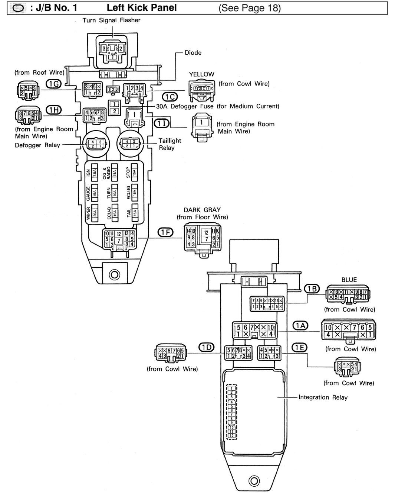
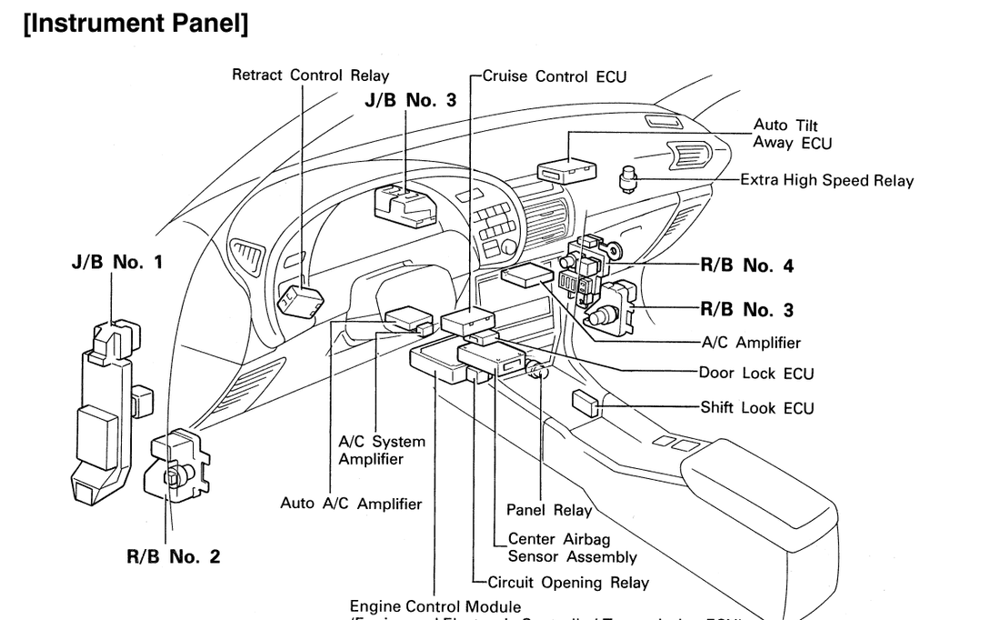
| Pin | OEM wire | Which side | Rest of OEM wire | New wire | How · EWD |
|---|---|---|---|---|---|
| 1I-1 | B | Plug side: the 1I plug stays seated in J/B No.1 | Pigtail / stub Cut to a 6 in stub on the 1I plug; the rest of the Engine Room Main lead comes out |
J/B No.1 main feedw_pdb_jb1 · 6 AWG Red · CabinPowerother end: POWER box AMI OUT-5 fuse, output stud |
heavy crimp butt splice into the factory 1I-1 lead (6 in stub; new feed is 6 AWG for the 60 A JB1 fuse) 1993 p.62 (ET1-1 B -> J/B No.1 1I-1; was cited p.18-19 / p.4 |
| 1H-2 | L-Y | Plug side: the 1H plug stays seated in J/B No.1 | Pigtail / stub Cut to a 6 in stub on the 1H plug; the rest of the Engine Room Main lead comes out |
Dome feed to J/B No.1w_pmu_dome · 14 AWG Red · CabinPowerother end: LOGIC fuse and relay box (glove box) pin BUS1-5 |
crimp butt splice into the factory 1H-2 lead at J/B1 (cabin side; engine-room main removed) 1993 p.132 |
| 1H-4 | G-B | Plug side: the 1H plug stays seated in J/B No.1 | Pigtail / stub Cut to a 6 in stub on the 1H plug; the rest of the Engine Room Main lead comes out |
LH front turn +w_turn_f7 · 18 AWG Red · EngineRoom-Cother end: LH front turn / clearance lamp F7 pin 3 |
crimp butt splice into the factory 1H-4 lead at J/B1 (cabin side; engine-room main removed) 1993 p.130 |
| 1H-5 | L | Plug side: the 1H plug stays seated in J/B No.1 | Pigtail / stub Cut to a 6 in stub on the 1H plug; the rest of the Engine Room Main lead comes out |
Wiper +12 Vw_wip_b · 14 AWG Red · EngineRoom-Cother end: Front wiper motor F9 (cowl, driver side) pin 4 |
crimp butt splice into the factory 1H-5 lead at J/B1 (cabin side; engine-room main removed) 1993 p.148 |
| 1H-6 | G | Plug side: the 1H plug stays seated in J/B No.1 | Pigtail / stub Cut to a 6 in stub on the 1H plug; the rest of the Engine Room Main lead comes out |
Clearance lamp feedw_clr · 16 AWG Red · EngineRoom-Cother end: Clearance lamp feed splice |
crimp butt splice into the factory 1H-6 lead at J/B1 (cabin side; engine-room main removed) 1993 p.112 |
| 1H-7 | B-O | Plug side: the 1H plug stays seated in J/B No.1 | Pigtail / stub Cut to a 6 in stub on the 1H plug; the rest of the Engine Room Main lead comes out |
Ignition +12 V that wakes the ECU (through the wake diode)w_ig2_in · 18 AWG Yellow · AB-cabinother end: ECU wake diode (ignition feed) pin 1 |
solder splice onto the factory lead 1993 TIS EWD p.62 (Power Source) |
| 1H-7 | B-O | Plug side: the 1H plug stays seated in J/B No.1 | Pigtail / stub Cut to a 6 in stub on the 1H plug; the rest of the Engine Room Main lead comes out |
Ignition switch sensew_ign · 18 AWG Yellow · AB-cabinother end: ECU plug B pin 28 |
solder splice onto the factory lead 1993 TIS EWD p.62 (Power Source) |
| 1H-7 | B-O | Plug side: the 1H plug stays seated in J/B No.1 | Pigtail / stub Cut to a 6 in stub on the 1H plug; the rest of the Engine Room Main lead comes out |
Ignition-on relay coil + (IGN fuse)w_k_on_86_cp · 18 AWG Red · CabinPowerother end: Ignition-on relay (CAN-Lambda feed) pin 86 |
solder splice onto the factory lead 1993 TIS EWD p.62 (Power Source) |
| 1H-8 | G-Y | Plug side: the 1H plug stays seated in J/B No.1 | Pigtail / stub Cut to a 6 in stub on the 1H plug; the rest of the Engine Room Main lead comes out |
RH front turn +w_turn_f8 · 18 AWG Red · EngineRoom-Cother end: RH front turn / clearance lamp F8 pin 3 |
crimp butt splice into the factory 1H-8 lead at J/B1 (cabin side; engine-room main removed) 1993 p.130 |
| 1B-11 | R-W | Plug side: Cowl Wire plug 1B, seated in J/B No.1 | Rest stays Tap only: the R-W door switch line stays |
Door triggerw_at_door · 20 AWG Yellow · AntiTheftother end: Alarm door trigger point |
soldered tap into the factory R-W lead at J/B No.1 1B-11 (cabin) 1993 p.132-133 (Interior Light; service hint: 1B-11 to groun |
Same idea as J/B No.1: the Engine Room Main wire is cut 6 in back from its half of IE1, and that old plug half stays clicked into the Cowl Wire half. Each new wire splices onto its 6 in pigtail. The Cowl Wire itself is never cut (Dan A4 a).
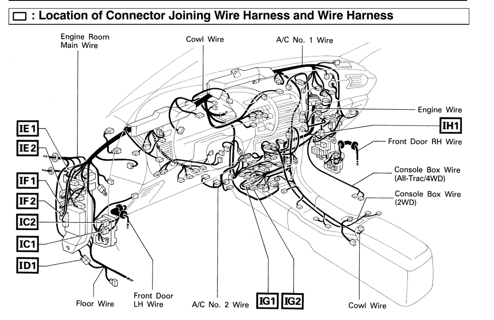
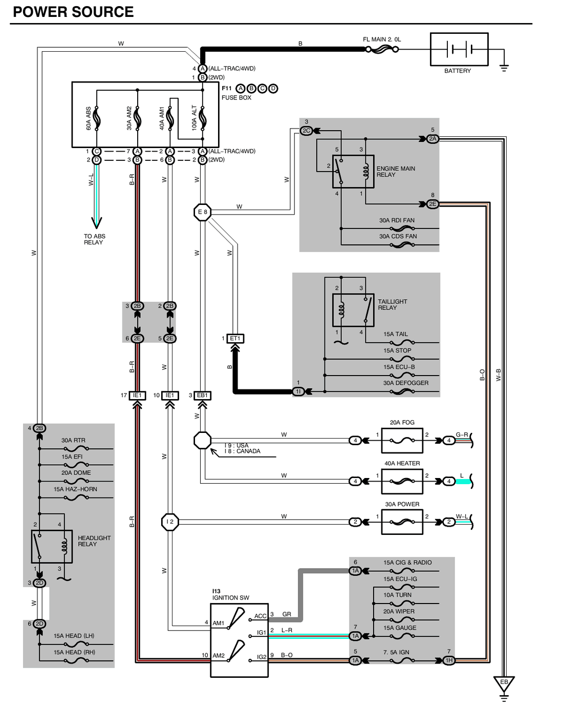
| Pin | OEM wire | Which side | Rest of OEM wire | New wire | How · EWD |
|---|---|---|---|---|---|
| IE1 2 | R-Y | Plug side: the Engine Room Main half of IE1, cut to 6 in pigtails and left clicked into the Cowl Wire half | Pigtail / stub Engine Room Main lead cut 6 in back from its IE1 half; the rest of it comes out. The Cowl Wire is not cut and keeps running to light control SW (C15) and pop-up relay R8 pin 8 via cowl splice I2 |
Headlamp relay coils (-) to the R-Y linew_head_coil_cp · 18 AWG White · CabinPowerother end: Headlamp relay coil splice |
butt splice onto the 6 in pigtail on the old plug half (Dan A4 a, 2026-11-20). The master method text still says "cowl-side lead"; fix pending 1993 p.116 |
| IE1 3 | W | Plug side: the Engine Room Main half of IE1, cut to 6 in pigtails and left clicked into the Cowl Wire half | Pigtail / stub Engine Room Main lead cut 6 in back from its IE1 half; the rest of it comes out. The Cowl Wire is not cut and keeps running to pop-up relay R8 pin 3 |
Pop-up relay feed (RTR 30 A)w_pmu_rtr · 10 AWG Red · CabinPowerother end: POWER box AMI OUT-2 fuse, output stud |
butt splice onto the 6 in pigtail on the old plug half (Dan A4 a, 2026-11-20). The master method text still says "cowl-side lead"; fix pending 1993 p.116 |
| IE1 6 | L-W | Plug side: the Engine Room Main half of IE1, cut to 6 in pigtails and left clicked into the Cowl Wire half | Pigtail / stub Engine Room Main lead cut 6 in back from its IE1 half; the rest of it comes out. The Cowl Wire is not cut and keeps running to wiper SW |
Wiper park switchw_wip_park · 14 AWG Yellow · EngineRoom-Cother end: Front wiper motor F9 (cowl, driver side) pin 3 |
butt splice onto the 6 in pigtail on the old plug half (Dan A4 a, 2026-11-20). The master method text still says "cowl-side lead"; fix pending 1993 p.148 |
| IE1 7 | G-Y | Plug side: the Engine Room Main half of IE1, cut to 6 in pigtails and left clicked into the Cowl Wire half | Pigtail / stub Engine Room Main lead cut 6 in back from its IE1 half; the rest of it comes out. The Cowl Wire is not cut and keeps running to pop-up relay R8 |
RH pop-up motor drive (relay R8 pin 4 to motor pin 4)w_rtr_r3_4 · 12 AWG Red · EngineRoom-Cother end: RH pop-up motor feed splice |
butt splice onto the 6 in pigtail on the old plug half (Dan A4 a, 2026-11-20). The master method text still says "cowl-side lead"; fix pending 1993 p.117 |
| IE1 8 | G-B | Plug side: the Engine Room Main half of IE1, cut to 6 in pigtails and left clicked into the Cowl Wire half | Pigtail / stub Engine Room Main lead cut 6 in back from its IE1 half; the rest of it comes out. The Cowl Wire is not cut and keeps running to pop-up relay R8 |
RH pop-up motor drive (relay R8 pin 5 to motor pin 2)w_rtr_r3_2 · 16 AWG Red · EngineRoom-Cother end: RH pop-up motor R3 pin 2 |
butt splice onto the 6 in pigtail on the old plug half (Dan A4 a, 2026-11-20). The master method text still says "cowl-side lead"; fix pending 1993 p.117 |
| IE1 9 | G-Y | Plug side: the Engine Room Main half of IE1, cut to 6 in pigtails and left clicked into the Cowl Wire half | Pigtail / stub Engine Room Main lead cut 6 in back from its IE1 half; the rest of it comes out. The Cowl Wire is not cut and keeps running to pop-up relay R8 |
Pop-up down (close) limit switches to relay R8 pin 11w_rtr_close · 18 AWG Yellow · EngineRoom-Cother end: Pop-up close limit splice |
butt splice onto the 6 in pigtail on the old plug half (Dan A4 a, 2026-11-20). The master method text still says "cowl-side lead"; fix pending 1993 p.117 |
| IE1 10 | W | Plug side: the Engine Room Main half of IE1, cut to 6 in pigtails and left clicked into the Cowl Wire half | Pigtail / stub Engine Room Main lead cut 6 in back from its IE1 half; the rest of it comes out. The Cowl Wire is not cut and keeps running to ignition SW I13 pin 4 and the R/B No.2 30 A POWER fuse via cowl splice I2 |
AM1 feed to IE1w_pdb_am1 · 8 AWG Red · CabinPowerother end: POWER box AMI OUT-3 fuse, output stud |
butt splice onto the 6 in pigtail on the old plug half (Dan A4 a, 2026-11-20). The master method text still says "cowl-side lead"; fix pending 1993 p.62 (IE1-10 W -> cowl splice I2 -> ignition switch I13 |
| IE1 12 | W | Plug side: the Engine Room Main half of IE1, cut to 6 in pigtails and left clicked into the Cowl Wire half | Pigtail / stub Engine Room Main lead cut 6 in back from its IE1 half; the rest of it comes out. The Cowl Wire is not cut and keeps running to hazard SW |
Hazard feedw_haz_cp · 14 AWG Red · CabinPowerother end: Hazard and horn fuse splice |
butt splice onto the 6 in pigtail on the old plug half (Dan A4 a, 2026-11-20). The master method text still says "cowl-side lead"; fix pending 1993 p.130 |
| IE1 13 | L-B | Plug side: the Engine Room Main half of IE1, cut to 6 in pigtails and left clicked into the Cowl Wire half | Pigtail / stub Engine Room Main lead cut 6 in back from its IE1 half; the rest of it comes out. The Cowl Wire is not cut and keeps running to wiper SW |
Wiper LOWw_wip_lo · 14 AWG Red · EngineRoom-Cother end: Front wiper motor F9 (cowl, driver side) pin 2 |
butt splice onto the 6 in pigtail on the old plug half (Dan A4 a, 2026-11-20). The master method text still says "cowl-side lead"; fix pending 1993 p.148 |
| IE1 14 | G | Plug side: the Engine Room Main half of IE1, cut to 6 in pigtails and left clicked into the Cowl Wire half | Pigtail / stub Engine Room Main lead cut 6 in back from its IE1 half; the rest of it comes out. The Cowl Wire is not cut and keeps running to pop-up relay R8 |
LH pop-up motor drive (relay R8 pin 1 to motor pin 4)w_rtr_r2_4 · 12 AWG Red · EngineRoom-Cother end: LH pop-up motor feed splice |
butt splice onto the 6 in pigtail on the old plug half (Dan A4 a, 2026-11-20). The master method text still says "cowl-side lead"; fix pending 1993 p.117 |
| IE1 15 | G-O | Plug side: the Engine Room Main half of IE1, cut to 6 in pigtails and left clicked into the Cowl Wire half | Pigtail / stub Engine Room Main lead cut 6 in back from its IE1 half; the rest of it comes out. The Cowl Wire is not cut and keeps running to pop-up relay R8 |
LH pop-up motor drive (relay R8 pin 2 to motor pin 2)w_rtr_r2_2 · 16 AWG Red · EngineRoom-Cother end: LH pop-up motor R2 pin 2 |
butt splice onto the 6 in pigtail on the old plug half (Dan A4 a, 2026-11-20). The master method text still says "cowl-side lead"; fix pending 1993 p.117 |
| IE1 16 | G-W | Plug side: the Engine Room Main half of IE1, cut to 6 in pigtails and left clicked into the Cowl Wire half | Pigtail / stub Engine Room Main lead cut 6 in back from its IE1 half; the rest of it comes out. The Cowl Wire is not cut and keeps running to pop-up relay R8 |
Pop-up up (open) limit switches to relay R8 pin 7w_rtr_open · 18 AWG Yellow · EngineRoom-Cother end: Pop-up open limit splice |
butt splice onto the 6 in pigtail on the old plug half (Dan A4 a, 2026-11-20). The master method text still says "cowl-side lead"; fix pending 1993 p.117 |
| IE1 17 | B-R | Plug side: the Engine Room Main half of IE1, cut to 6 in pigtails and left clicked into the Cowl Wire half | Pigtail / stub Engine Room Main lead cut 6 in back from its IE1 half; the rest of it comes out. The Cowl Wire is not cut and keeps running to ignition SW I13 pin 10 |
AM2 feed to IE1w_pdb_am2 · 10 AWG Red · CabinPowerother end: POWER box AMI OUT-4 fuse, output stud |
butt splice onto the 6 in pigtail on the old plug half (Dan A4 a, 2026-11-20). The master method text still says "cowl-side lead"; fix pending 1993 p.62 (IE1-17 B-R -> ignition switch I13-10 AM2; was cit |
| IE1 18 | R-W | Plug side: the Engine Room Main half of IE1, cut to 6 in pigtails and left clicked into the Cowl Wire half | Pigtail / stub Engine Room Main lead cut 6 in back from its IE1 half; the rest of it comes out. The Cowl Wire is not cut and keeps running to dimmer SW C15 pin 12 |
High-beam relay coil (-) to the dimmerw_hl_low · 18 AWG White · CabinPowerother end: High-beam relay pin 85 |
butt splice onto the 6 in pigtail on the old plug half (Dan A4 a, 2026-11-20). The master method text still says "cowl-side lead"; fix pending 1993 p.116 |
| IE1 19 | G | Plug side: the Engine Room Main half of IE1, cut to 6 in pigtails and left clicked into the Cowl Wire half | Pigtail / stub Engine Room Main lead cut 6 in back from its IE1 half; the rest of it comes out. The Cowl Wire is not cut and keeps running to horn SW (C15) |
Horn relay coil (-)w_horn_85_cp · 18 AWG White · CabinPowerother end: Horn relay pin 85 |
butt splice onto the 6 in pigtail on the old plug half (Dan A4 a, 2026-11-20). The master method text still says "cowl-side lead"; fix pending 1993 p.185 |
| IE1 20 | L-O | Plug side: the Engine Room Main half of IE1, cut to 6 in pigtails and left clicked into the Cowl Wire half | Pigtail / stub Engine Room Main lead cut 6 in back from its IE1 half; the rest of it comes out. The Cowl Wire is not cut and keeps running to wiper SW |
Wiper HIGHw_wip_hi · 14 AWG Red · EngineRoom-Cother end: Front wiper motor F9 (cowl, driver side) pin 1 |
butt splice onto the 6 in pigtail on the old plug half (Dan A4 a, 2026-11-20). The master method text still says "cowl-side lead"; fix pending 1993 p.148 |
The Engine Wire is cut 6 in back from its half of IG2, and that old plug half stays clicked into the Cowl Wire half. Each new wire splices onto its 6 in pigtail. The Cowl Wire itself is never cut (Dan A4 a).
| Pin | OEM wire | Which side | Rest of OEM wire | New wire | How · EWD |
|---|---|---|---|---|---|
| IG2 4 | R-L | Plug side: the Engine Wire half of IG2, cut to 6 in pigtails and left clicked into the Cowl Wire half | Pigtail / stub Engine Wire lead cut 6 in back from its IG2 half; the rest of it comes out. The Cowl Wire is not cut: J/B No.3 3B-9 (GAUGE 15 A) feed |
+12 V to reverse switchw_rev_feed_c · 16 AWG Red · AB-cabinother end: Firewall bulkhead connector (cabin side) pin 77 |
butt splice onto the 6 in pigtail on the old plug half (Dan A4 a, 2026-11-20). The master method text still says "cowl-side lead"; fix pending 1992 p.132 / 1990 p.82 (IG2 pin); Mitchell 1993 Fig. 16 grid |
| IG2 13 | R-B | Plug side: the Engine Wire half of IG2, cut to 6 in pigtails and left clicked into the Cowl Wire half | Pigtail / stub Engine Wire lead cut 6 in back from its IG2 half; the rest of it comes out. The Cowl Wire is not cut: rear back-up lamps (IF1-7) |
+12 V to reverse lampsw_rev_lamps · 16 AWG Yellow · AB-cabinother end: Reverse signal splice |
butt splice onto the 6 in pigtail on the old plug half (Dan A4 a, 2026-11-20). The master method text still says "cowl-side lead"; fix pending 1992 p.132 (IG2 pin); Mitchell 1993 Fig. 16 grid 63 (colour) |
| IG2 15 | B-R | Plug side: the Engine Wire half of IG2, cut to 6 in pigtails and left clicked into the Cowl Wire half | Pigtail / stub Engine Wire lead cut 6 in back from its IG2 half; the rest of it comes out. The Cowl Wire is not cut: J/B No.1 ECU-IG 15 A feed |
Alternator IG to the kill switchw_ig_ks_in · 16 AWG Red · AB-cabinother end: Battery kill switch (trunk) pin ALT1 |
butt splice onto the 6 in pigtail on the old plug half (Dan A4 a, 2026-11-20). The master method text still says "cowl-side lead"; fix pending 1993 p.74-75 |
| IG2 16 | Y | Plug side: the Engine Wire half of IG2, cut to 6 in pigtails and left clicked into the Cowl Wire half | Pigtail / stub Engine Wire lead cut 6 in back from its IG2 half; the rest of it comes out. The Cowl Wire is not cut: cowl splice I5 to meter plug C14 (C) pin 8 |
Alternator charge lamp (L)w_alt_l_c · 20 AWG White · EngineRoom-Cother end: Alternator plug pin 2 |
butt splice onto the 6 in pigtail on the old plug half (Dan A4 a, 2026-11-20). The master method text still says "cowl-side lead"; fix pending 1993 p.74-75 |
From docs/harness/circuit-plan.md, the plan file; where it and the master disagree, the master wins. Actions: remove = dead, out back to its last live point; keep = factory wire stays; re-fed by = the named new wire takes over.
Decided 2026-10-21. Every wire is dead and comes out back to its last live point, except IG2-15 B-R (6 in pigtail: kill switch, then alternator IG), IG2-16 Y (charge lamp, stays) and IG1-11 (branch only; splice I2 and ground IE stay).
Rows tagged [90/92] are not 1993-verified (row 156).
| Joint | Pin | Wire colour | Signal | Cabin end | Engine end (removed with Engine Wire) | EWD page | Action |
|---|---|---|---|---|---|---|---|
| IG1 | 1 | - | not used (vacuum-type cruise only) | - | - | 1992 p.186 | none |
| IG1 | 2 | P | IDL to cruise ECU | Cruise ECU plug B pin 9 IDL | ECU plug C pin 12 IDL / splice I7 -> TPS T1-2 | [90/92] 1990 p.119, 1992 p.181; 1993 p.80 | remove (dead) |
| IG1 | 3 | L | Cruise vehicle-speed sensor signal | Cruise ECU plug A pin 7 SPD (M/T) | Speed sensor for cruise (1993 V2) pin 2 | [90/92] 1990 p.118 | remove (dead) |
| IG1 | 4 | B-W | A/C clutch "on" to ECU AC | OEM ECU plug A (E9) pin 10 AC | Engine Wire E5 -> compressor A4-4, J/B2 2C-6 | 1993 p.79, 210 | remove (dead) |
| IG1 | 5 | - | ECT only (A/T) | - | - | 1992 p.171 | none |
| IG1 | 6 | GR-B | Cruise actuator VR3 | Cruise ECU A10 | Cruise actuator pin 3 | [90/92] 1990 p.119 | remove (dead) |
| IG1 | 7 | GR | Cruise actuator VR1 | Cruise ECU A12 | Actuator pin 1 | [90/92] | remove (dead) |
| IG1 | 8 | R-G | Cruise actuator MC | Cruise ECU B10 | Actuator pin 7 | [90/92] | remove (dead) |
| IG1 | 11 | BR | Cruise speed-sensor ground | Cowl splice I2 (USA) -> ground IE. Shared with the cruise control switch BR ground (combination switch plug C16 (B) pin 17, 1993 EWD grid 59; 1993 TIS Ground Points p.3) and cruise ECU GND A9. | Speed sensor pin 3 | [90/92] 1990 p.118, 1992 p.180 | remove IG1 branch back to splice I2 (I2/IE stays) |
| IG1 | 12 | Y-B | Oil-pressure warning | Comb meter C14 (C) pin 6 (removed) | ES2-3 -> ER No.2 -> oil pressure SW O2-1 | 1993 p.207 | remove (dead) |
| IG1 | 13 | Y-G | Water-temp gauge | Comb meter C12 (A) pin 6 | Water temp sender W2-1 | 1993 p.207 | remove (dead) |
| IG1 | 14 | B | Tach (igniter TAC) | Comb meter C14 (C) tacho; pin number not printed (*4) | Igniter I2-4 TAC (also feeds IH1-6 -> A15-18) | 1993 p.206 | remove (dead) |
| IG1 | 15 | L-R (cowl) / R-W (engine) | Turbo (boost) meter | Comb meter C13 (B) pin 4 | Turbo pressure sensor T2-2 PIM | 1993 p.207, p.80 | remove (dead) |
| IG1 | 16 | R-Y | Cruise actuator L through the cruise-cancel contact | Stop-light SW cruise contact -> cruise ECU B3 | Actuator pin 5 | [90/92] | remove (dead) |
| IG1 | 17 | GR-R | Cruise actuator VR2 | Cruise ECU A11 | Actuator pin 2 | [90/92] | remove (dead) |
| IG1 | 18 | P-B | Cruise actuator MO | Cruise ECU B4 | Actuator pin 6 | [90/92] | remove (dead) |
| IG2 | 1 | L-Y (cowl) / Y or L-Y (engine) | ECU ATS <-> A/C amp A15-2 | OEM ECU plug A pin 7 ATS | IH1-1 -> A15-2 | 1993 p.79, 210 | remove (dead) |
| IG2 | 2 | P | MIL (ECU W) to DLC1 "W" | Cowl splice I6 -> comb meter C12 (A) pin 3 + ECU plug A pin 5 W | DLC1 pin 2 W | 1993 p.81, 79 | remove (dead) |
| IG2 | 3 | W-L | SRS TC to DLC1 | Centre airbag sensor assy pin 12 TC (removed) | DLC1 TC (15) | [90/92] 1992 p.200 | remove (dead) |
| IG2 | 4 | R-L | Back-up SW feed (GAUGE 15A) | J/B3 3B-9 (GAUGE via 1E-5) | Back-up light SW B1 pin 2 (M/T) | [90/92] 1990 p.82, 1992 p.132 | remove (dead); new switch feed splices to the IG2-4 pigtail |
| IG2 | 5 | G | FC (fuel-pump control) | Circuit opening relay C9-4 (removed) | ECU A14 FC | 1993 p.78, 79 | remove (dead) |
| IG2 | 6 | W-L | TC diagnostic (cruise + ABS) | Cruise ECU B7 TC; IF1-3 -> ABS ECU TC | DLC1 TC (15) | [90/92] 1990 p.118/124 | remove (dead) |
| IG2 | 7 | P | BATT (EFI 15A) | OEM ECU plug A pin 1 BATT | J/B2 2C-4 (15A EFI) | 1993 p.79 | remove (dead) |
| IG2 | 12 | BR | SRS warning (LA) to DLC1 AB | Cowl splice I4 -> comb meter C12 (A) pin 8 + centre airbag sensor pin 9 LA | DLC1 AB (12) | 1993 p.207; 1992 p.200 | remove (dead) |
| IG2 | 13 | R-B | Back-up lamp output | IF1-7 -> Floor -> BP1-8 -> rear back-up lamps | Back-up SW B1 pin 1 | [90/92] 1992 p.132 | remove (dead); new switch output splices to the IG2-13 pigtail |
| IG2 | 14 | BR | Water-temp gauge ground | Comb meter C12 (A) pin 5 | Ground EC (intake manifold) | 1993 p.207 | remove (dead) |
| IG2 | 15 | B-R | ECU-IG 15A | J3 <- J/B1 1B-8 (15A ECU-IG) | Alternator IG (round plug G2 (B) pin 3) | 1993 p.74; 1992 p.180 | KEEP 6 in pigtail, splice (alt IG feed per master) |
| IG2 | 16 | Y | Charge lamp (alternator L) | Cowl splice I5 -> comb meter C14 (C) pin 8 | Alternator L (round plug G2 (B) pin 2) | 1993 p.74 | KEEP; Dash charge LED sinks to C14-8 |
| IG2 | 17 | W-R | ABS TS | IF1-16 -> ABS ECU TS | DLC1 TS (16) | [90/92] 1992 p.192 | remove (dead) |
| IG2 | 18 | B-Y | +B from EFI main relay | Cowl splice I6 -> ECU A12 / A13, C9-2 | J/B2 2C-10 / splice I7 (VSVs) | 1993 p.80, 78 | remove (dead) |
| IG2 | 19 | L-B | Fuel-pump + (FP check) | Cowl splice I1 -> IE2-19 and IF1-15 -> BP1-12 -> fuel pump | DLC1 FP | 1993 p.79, 78 | remove (dead) |
| IG2 | 20 | B | STA (cranking) | Cowl splice I6 -> ECU A11, C9-3, comb meter C13 (B) pin 10 | Engine Wire <- EB1-2 (starter relay out) | 1993 p.78, 206 | remove (dead) |
R/B No.4 stays with its starter relay, heater relay, 40 A HEATER and 10 A A/C fuses. The master names the terminal (ST-1 = starter relay pin 1, etc.); the wire itself is in the box's plug A on the Cowl Wire.
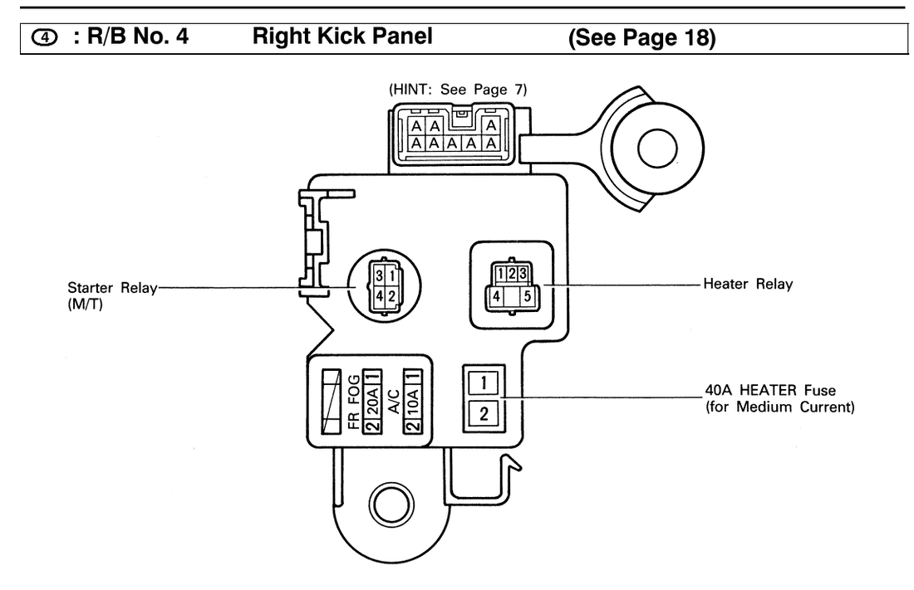
| Pin | OEM wire | Which side | Rest of OEM wire | New wire | How · EWD |
|---|---|---|---|---|---|
| HTR-1 | W | Plug side: the Cowl Wire lead in R/B No.4 plug A, at the 40 A HEATER fuse pin 1 circuit. Plug-A cavity numbers are not in the 1993 pulls: find it by colour | Pigtail / stub Past the tap the W lead only ran to cowl splice I9 and EB1-3 (both dead, p.62): cut to a 6 in stub. Still open: OPEN-ITEMS row 183 "splice I9" |
R/B No.4 heater fuse feedw_rb4_feed · 8 AWG Red · CabinPowerother end: POWER box AMI IN-1 fuse, output stud |
heavy crimp butt splice into the factory lead 1993 p.62 / p.215 |
| ST-1 | B-W | Plug side: the Cowl Wire lead in R/B No.4 plug A, at the starter relay pin 1 circuit. Plug-A cavity numbers are not in the 1993 pulls: find it by colour | Rest stays B-W stays: still the key START feed to the starter relay coil |
Start switch ST1 feedw_start_in_cp · 20 AWG Yellow · CabinPowerother end: LOGIC fuse and relay box (glove box) pin BUS2-13 IN |
solder splice onto the factory lead 1993 TIS EWD p.66 (Starting and Ignition, All-Trac) |
| AC-2 | V-R | Plug side: the Cowl Wire lead in R/B No.4 plug A, at the 10 A A/C fuse pin 2 circuit. Plug-A cavity numbers are not in the 1993 pulls: find it by colour | Rest stays V-R stays: the A/C IG bus to the A/C amps |
+12 V to A/C pressure switchw_acp_1 · 18 AWG Yellow · EngineRoom-Cother end: A/C pressure switch A5 (engine bay) pin 1 |
crimp butt splice into the factory V-R lead at R/B No.4 1993 p.211-212 |
| ST-4 | B | Plug side: the Cowl Wire lead in R/B No.4 plug A, at the starter relay pin 4 circuit. Plug-A cavity numbers are not in the 1993 pulls: find it by colour | Pigtail / stub Past the tap the B lead only ran to EB1-2 (engine bay): cut to a 6 in stub, the rest comes out |
Starter solenoid Sw_strl_c · 12 AWG Red · AB-cabinother end: Firewall bulkhead connector (cabin side) pin 3 |
crimp butt splice into the factory lead at R/B No.4 pin 4 1993 p.66 |
From docs/harness/circuit-plan.md, the plan file; where it and the master disagree, the master wins. Actions: remove = dead, out back to its last live point; keep = factory wire stays; re-fed by = the named new wire takes over.
| Terminal | Pin | Colour | Signal | Kept-side end | EWD | Draft said | Action |
|---|---|---|---|---|---|---|---|
| Starter relay | 1 | B-W | coil + (ST1) | I8 / I9 <- ignition SW I13-7 | p.66, 78 | reuse as the crank signal | keep; tapped by w_start_in_cp (start request, LOGIC BUS2-13 -> w_start to Link DI 7), pin id ST-1 (fault C3 fixed in phase 2) |
| Starter relay | 2 | B-W | contact in (ST1) | I8 / I9 <- I13-7 | p.66 | cut + cap | keep |
| Starter relay | 3 | B | coil - through clutch start SW C11 pin 1 | C11 | p.66 | C11 -> Link Aux 8 | keep: C11 completes the starter circuit in hardware, not a Link input (circuit 2) |
| Starter relay | 4 | B | starter out | cowl -> EB1-2 (Engine Wire) | p.66, 78 | cut + cap; k_str instead | re-fed by w_strl_c (R/B4 pin 4 -> DRB102 cavity 3) and w_strl_e (-> starter S) |
| Heater relay | 1 | L-W | coil - from A/C amp HR | IQ2-9 -> A31 / A32 HR | p.215 | k_htr 85 | keep (no k_htr) |
| Heater relay | 3 | R-L | coil + (GAUGE via J4) | cowl J4 | p.215 | k_htr 86 | keep |
| Heater relay | 4 | B | blower + out | J5 -> blower B4 pin 2, -> 10 A A/C fuse pin 1 | p.211, 215 | re-feed from k_htr 87 | keep |
| Heater relay | 5 | L | contact in | 40 A HEATER fuse pin 2 | p.215 | cut + cap | keep |
| Heater relay | 2 | W-B | 87a = ground | R/B4 plug A pin 4 -> ground IG | p.215 | cut + cap | keep |
| 40 A HEATER fuse | 1 | W | feed in (EB1-3 via I9) | cowl I9 | p.62, 215 | cut + cap | re-fed by w_rb4_feed (AMI IN-1), pin id HTR-1 (fault C3 fixed in phase 2); the EB1-3 leg comes out (group 1), leaving splice I9 with one live leg (open, row 183) |
| 40 A HEATER fuse | 2 | L | out to heater relay | heater relay pin 5 | p.215 | cut + cap | keep |
| 20 A FR FOG fuse | 1 / 2 | W / G-R | feed in (I9) / out to R/B3 pin 4 | I9; R/B3 | p.62; 1992 p.128 | fog removed | the fuse comes out, its seat stays empty; pin 1 lead removed back to splice I9 (w_fog_fuse_in; I9 keeps the HEATER and old EB1-3 legs), pin 2 lead removed whole (w_fog_rb3_4) |
| 10 A A/C fuse | 1 | B | in from heater relay 4 (J5) | J5 bus | p.211, 215 | cut + cap | keep |
| 10 A A/C fuse | 2 | V-R | A/C IG out | I9 -> EB2-1 (A5) and the V-R bus to the A/C amps | p.211-212 | re-feed, slot open | keep; A5 pin 1 tapped by w_acp_1 (group 5) |
Pin 12 is a plain tap. Pin 8 is cut near R8 and pop-up diode D-R8-1 bridges the cut (DRL "up" input).
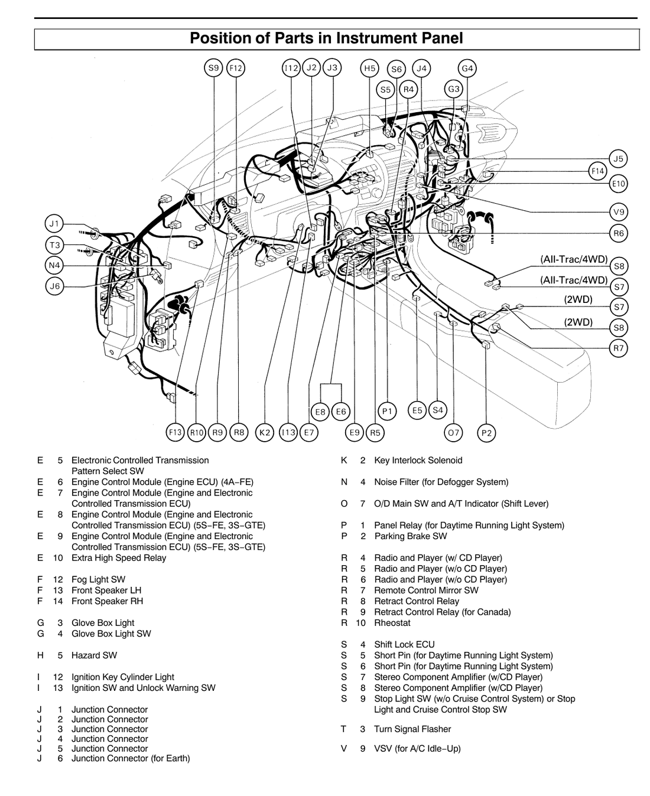
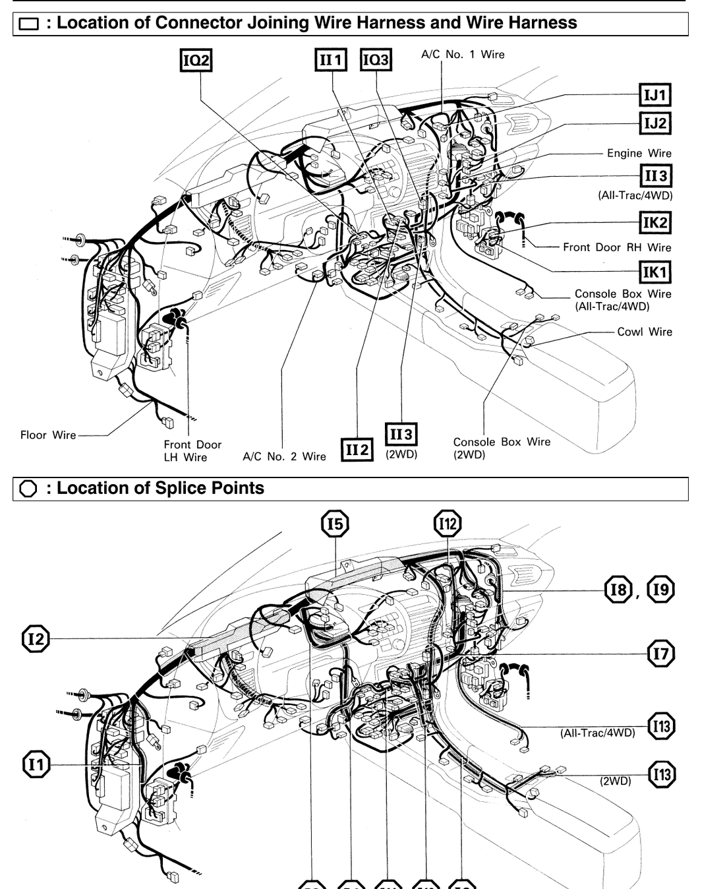
| Pin | OEM wire | Which side | Rest of OEM wire | New wire | How · EWD |
|---|---|---|---|---|---|
| Cowl splice I2 R-Y lead | |||||
| I2 R-Y | R-Y | I2 (stalk) side of the cut R-Y lead | Cut, both sides used Cut near R8: both sides stay; pop-up diode D-R8-1 bridges the cut |
Pop-up UP from the stalk (R-Y)w_r8_d1_k_cp · 20 AWG White · CabinPowerother end: Pop-up diode 1 (stalk side) pin 2 |
solder splice onto the I2 side of the cut R-Y lead near R8 (B9; Dan N87 a) 1993 p.116 |
| Pop-up relay R8 | |||||
| R8 8 | R-Y | R8 side of the cut R-Y lead | Cut, both sides used Cut near R8: both sides stay; pop-up diode D-R8-1 bridges the cut |
Pop-up UP input (ground = up)w_r8_up_cp · 20 AWG White · CabinPowerother end: Pop-up UP splice |
cut the R-Y lead between cowl splice I2 and R8 pin 8 near R8 (kept cabin lead, cabin side); solder splice onto the R8 side (B9; Dan N87 a) 1993 p.116 / p.33 |
| R8 12 | W-B | Plug side: R8 harness plug | Rest stays W-B stays: ground to J/B No.3 3B-1 / ground ID |
DRL switch ground (R8 ground lead)w_drl_sw_gnd_cp · 20 AWG Black · CabinPowerother end: DRL switch pin 2 |
solder splice onto the factory lead near R8 1993 p.116 / p.33 |
Both amps stay. Every tap is at the amp's own harness plug.
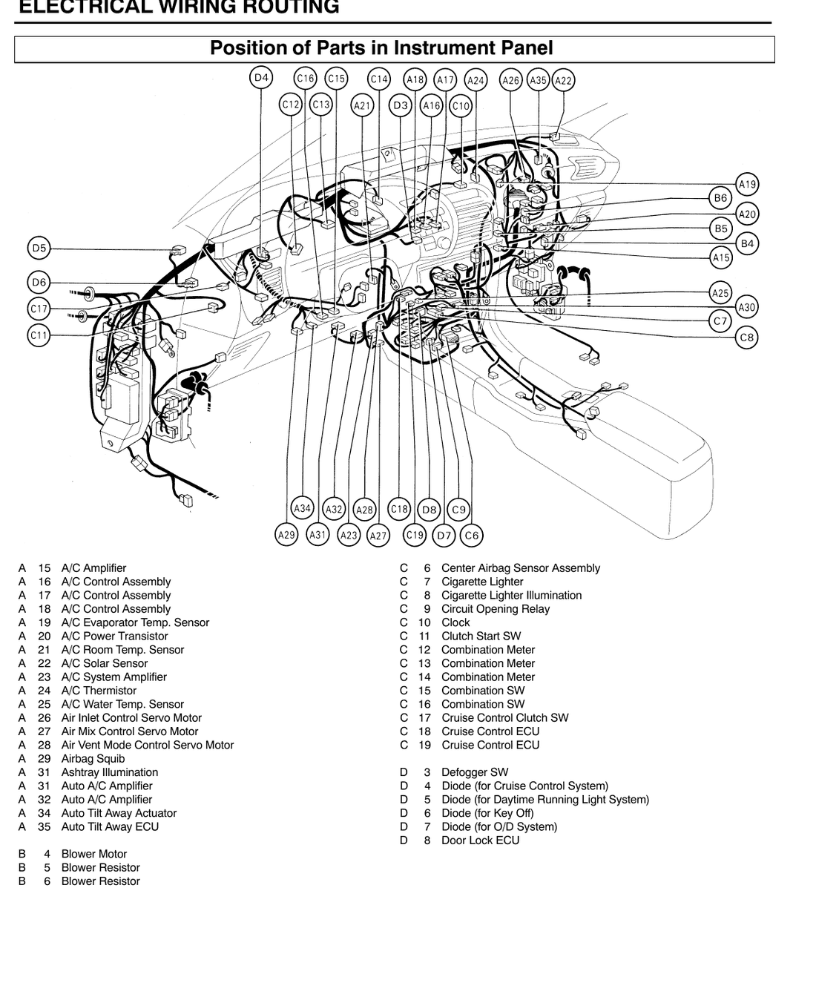
| Pin | OEM wire | Which side | Rest of OEM wire | New wire | How · EWD |
|---|---|---|---|---|---|
| A/C amplifier A15 | |||||
| A15 2 | L-Y | Plug side: A15 harness plug | Pigtail / stub Past the tap the lead only ran to IH1-1 (Engine Wire, to the old ECU ATS): cut to a 6 in stub at A15 |
A/C coolant-OK groundw_ac_cool_gnd · 20 AWG Black · AB-cabinother end: Ground bolt IG, RH kick panel (R/B No.4 set bolt) |
solder onto the factory lead 1993 p.210 |
| A15 8 | L-Y | Plug side: A15 harness plug | Pigtail / stub Past the tap the lead only ran to IJ1-1, EA1-3 (old A/C clutch relay, engine bay): cut to a 6 in stub at A15 |
A/C clutch relay coil (-)w_acc_trig · 18 AWG White · AB-cabinother end: A/C clutch relay pin 85 |
solder onto the factory lead 1993 p.210-211 |
| A15 9 | W-L | Plug side: A15 harness plug | Pigtail / stub Past the tap the lead only ran to IH1-5 (compressor lock sensor, Engine Wire): cut to a 6 in stub at A15 |
Lock sensor signal (modified tacho)w_lock_9 · 20 AWG White · AB-cabinother end: A/C lock sensor resistor 4.7 k pin 2 |
solder onto the factory lead 1993 p.210-211 |
| A15 11 | G-Y | Plug side: A15 harness plug | Pigtail / stub Past the tap the lead only ran to IJ1-3 (old ECU ACT): cut to a 6 in stub at A15 |
A/C cancel (ACT)w_ac_kill · 20 AWG White · AB-cabinother end: ECU plug A pin 18 |
solder splice onto the factory G-Y ACT lead at the A/C amplifier 1993 p.210 (A15 pin 11 G-Y; checked 2026-11-02, row 156); re |
| A15 13 | Y-R | Plug side: A15 harness plug | Pigtail / stub Past the tap the lead only ran to IJ1-11, E10, EB2-2 (pressure switch, engine bay): cut to a 6 in stub at A15 |
A/C pressure switch signalw_ac_psw_sw · 20 AWG Yellow · AB-cabinother end: A/C pressure switch signal splice |
solder splice onto the factory Y-R lead at the A/C amplifier 1993 p.211 (A15 pin 13 Y-R; checked 2026-11-02, row 156); re |
| A15 18 | B | Plug side: A15 harness plug | Pigtail / stub Past the tap the lead only ran to IH1-6 (igniter TAC, Engine Wire): cut to a 6 in stub at A15 |
Engine speed (tacho)w_tach_18 · 20 AWG White · AB-cabinother end: Tacho signal splice |
solder onto the factory lead 1993 p.211 |
| Auto A/C amplifier A32 | |||||
| A32 6 | Y-B | Plug side: A32 harness plug | Pigtail / stub Past the tap the Y-B only ran IQ2-3, EA1-4 to the old A1 lead (p.212): cut to a 6 in stub at A32 |
Ambient temp signalw_amb_sig · 20 AWG Yellow · EngineRoom-Cother end: Ambient air temp sensor A1 (front, 6 in pigtail) pin 2 |
solder onto the factory lead at A32 (the master gives only the A1-end method for this wire) 1993 p.212 |
| A32 15 | Y | Plug side: A32 harness plug | Rest stays Y sensor common stays to the other A/C sensors (p.211-212) |
A/C sensor commonw_amb_sg · 20 AWG Yellow · AB-cabinother end: A/C sensor common splice |
solder onto the factory lead 1993 p.211-212 |
From docs/harness/circuit-plan.md, the plan file; where it and the master disagree, the master wins. Actions: remove = dead, out back to its last live point; keep = factory wire stays; re-fed by = the named new wire takes over.
| Pin | Colour | Signal | Kept-side end | EWD | Draft said | Action |
|---|---|---|---|---|---|---|
| 1 | L-Y | A15 -> OEM ECU ATS | A/C amp A15 pin 2 | 1993 p.79, 210 | maybe a new wire to a Link input | remove the IH1 leg; A15 pin 2 hard-grounded by w_ac_cool_gnd (D16) |
| 3 | Y-B | Compressor sensor coil | A15 pin 5 | 1993 p.210 | new wire IH1-3 -> A4-3 | remove; no master row: D16 uses no compressor sensor coil (the lock check is fed from the tacho, pin 9) |
| 4 | W-R | Compressor lock sensor | A15 pin 14 via cowl splice I12 (I12 also feeds the A24 thermistor pin 1) | 1993 p.210-211 | new wire IH1-4 -> A4-2 | remove the IH1 leg back to I12; I12 and A24 keep |
| 5 | W-L | Compressor lock sensor | A15 pin 9 | 1993 p.210 | new wire IH1-5 -> A4-1 | remove the IH1 leg; pin 9 re-fed by w_lock_9 (tacho through R-LOCK 4.7 kΩ, N61) |
| 6 | B | Engine speed for lock detection | A15 pin 18 | 1993 p.211 | re-feed from a Link output (open) | re-fed by w_tach_18 (Ign 8 tacho via SP-TACH) |
Old radio ACC feed for the RealDash Pi fuse.
| Pin | OEM wire | Which side | Rest of OEM wire | New wire | How · EWD |
|---|---|---|---|---|---|
| II1 3 | GR | Cowl Wire lead behind its II1 half: the console box half went with the radio harness, so there is no old plug half left to keep | Rest stays Cowl wire stays: CIG & RADIO 15 A via J/B No.3 3C-2 |
RealDash Pi +12 V from the radio ACC feedw_pi12 · 16 AWG Red · Dashother end: RealDash Pi inline fuse 5 A pin IN |
solder splice onto the factory lead (the console-box side of II1 went with the radio harness) 1993 TIS EWD p.201 (Radio and Player) |
The old meter is gone; its Cowl Wire plugs stay as tap points for the dash LEDs.
| Pin | OEM wire | Which side | Rest of OEM wire | New wire | How · EWD |
|---|---|---|---|---|---|
| Meter plug C13 (B) | |||||
| C13 1 | W-B | Plug side: old meter plug (meter removed, plug stays on the Cowl Wire) | Rest stays W-B ground to J/B No.3 / J6 / ground ID stays |
LED common ground to the cluster groundw_led_gnd_c13 · 20 AWG Black · Dashother end: Cluster LED ground splice |
solder splice onto the factory lead at the combination meter 1993 TIS EWD p.206 (Combination Meter plug C13 (B)) |
| C13 2 | G-B | Plug side: old meter plug (meter removed, plug stays on the Cowl Wire) | Rest stays G-B turn LH line stays |
Turn LH LED +w_tl_a · 20 AWG Red · Dashother end: Turn LH LED pin 1 |
solder splice onto the factory lead at the combination meter 1993 TIS EWD p.206 (Combination Meter plug C13 (B)) |
| C13 11 | G-Y | Plug side: old meter plug (meter removed, plug stays on the Cowl Wire) | Rest stays G-Y turn RH line stays |
Turn RH LED +w_tr_a · 20 AWG Red · Dashother end: Turn RH LED pin 1 |
solder splice onto the factory lead at the combination meter 1993 TIS EWD p.206 (Combination Meter plug C13 (B)) |
| Meter plug C14 (C) | |||||
| C14 1 | R-G | Plug side: old meter plug (meter removed, plug stays on the Cowl Wire) | Rest stays R-G park brake switch line stays |
Park brake switch (-)w_pk_k · 20 AWG Yellow · Dashother end: Park brake LED pin 2 |
solder splice onto the factory lead at the combination meter 1993 TIS EWD p.206 (Combination Meter plug C14 (C)) |
| C14 8 | Y | Plug side: old meter plug (meter removed, plug stays on the Cowl Wire) | Rest stays Y charge lamp line (cowl splice I5 to IG2-16) stays |
Charge lamp drivew_chg_k · 20 AWG White · Dashother end: Charge LED pin 2 |
solder splice onto the factory lead at the combination meter 1993 TIS EWD p.207 (Combination Meter plug C14 (C)) |
| C14 9 | B-O | Plug side: old meter plug (meter removed, plug stays on the Cowl Wire) | Rest stays B-O IGN feed (J/B No.1 1D-5) stays |
Ignition +12 V for the cluster LEDsw_ig_tap · 20 AWG Red · Dashother end: Cluster LED +12 V splice |
solder splice onto the factory lead at the combination meter 1993 TIS EWD p.207 (Combination Meter plug C14 (C)) |
| Pin | OEM wire | Which side | Rest of OEM wire | New wire | How · EWD |
|---|---|---|---|---|---|
| Combination switch C16 (B), cruise switch | |||||
| C16 5 | W | Plug side: C16 (B) plug | Pigtail / stub Past the tap the lead only ran to the removed cruise ECU: cut to a 6 in stub at C16 |
Cruise ladderw_an2 · 20 AWG Yellow · Dashother end: Cruise switch ladder splice |
solder splice onto the factory lead 1993 Celica overall EWD (Toyota grid, Mitchell 1993 Electric |
| C16 15 | Y-B | Plug side: C16 (B) plug | Pigtail / stub Past the tap the lead only ran to the removed cruise ECU: cut to a 6 in stub at C16 |
Cruise MAIN onw_sw2 · 20 AWG Yellow · Dashother end: ECUMaster CAN switch board pin 25 |
solder splice onto the factory lead 1993 Celica overall EWD (Toyota grid, Mitchell 1993 Electric |
| C16 17 | BR | Plug side: C16 (B) plug | Pigtail / stub 6 in pigtail stays at C16; the BR leg comes out back to its ground splice (removal row w_cru_gnd_cut) |
Cruise stalk returnw_cru_gnd · 20 AWG Blue · Dashother end: Switch board reference ground splice |
solder splice onto the factory lead 1993 Celica overall EWD (Toyota grid, Mitchell 1993 Electric |
| Cruise clutch switch C17 | |||||
| C17 2 | B | Plug side: C17 harness plug | Pigtail / stub Past the tap the B lead only ran to the removed cruise ECU: cut to a 6 in stub at C17 |
Clutch pedal switchw_sw5 · 20 AWG Yellow · Dashother end: ECUMaster CAN switch board pin 5 |
solder splice onto the factory lead Mitchell 1993 Celica Electrical cruise Fig. 12 (PDF p.377); |
| Dimmer rheostat R10 | |||||
| R10 1 | G | Plug side: R10 harness plug | Rest stays G TAIL feed stays (dash lighting) |
Lights on +12 Vw_hl_sense_in · 20 AWG Red · Dashother end: 8-channel opto board pin IN3 |
solder splice onto the factory pin 1 lead (green, TAIL +12 V) 1993 p.108-109 |
| Stop lamp switch S9 | |||||
| S9 1 | G-W | Plug side: S9 harness plug | Rest stays G-W stays: still feeds the stop lamps |
Brake on +12 Vw_sw6 · 16 AWG Yellow · Dashother end: 8-channel opto board pin IN1 |
soldered tap into the factory G-W lead at S9 (cabin) 1993 p.126-127 |
The cabin cowl lead stays; the bay run is new wire to the washer's own plug.
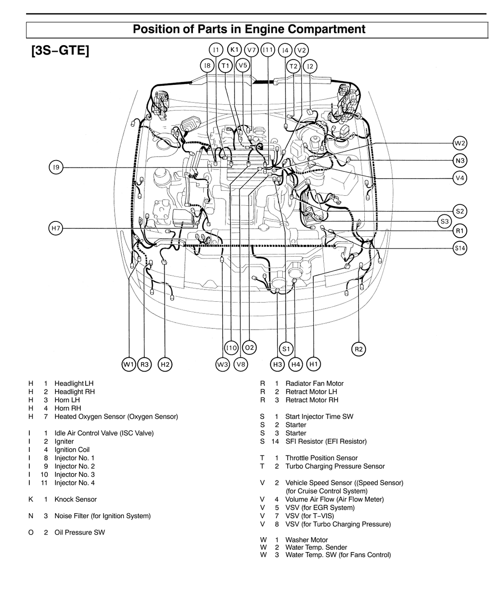
| Pin | OEM wire | Which side | Rest of OEM wire | New wire | How · EWD |
|---|---|---|---|---|---|
| W1 1 | L-R | Cabin end of the cut: the Cowl Wire runs straight through the firewall here (no joint plug), so it is cut at the firewall, cabin side | Rest stays Cabin part stays to the washer switch; the bay part to W1 comes out |
Washer motor switch sidew_wash_neg · 14 AWG Red · EngineRoom-Cother end: Washer motor W1 (RH front corner, low) pin 1 |
crimp butt splice into the factory cowl-wire lead to W1 at the firewall (cabin side; its bay run is removed) 1993 p.148 |
| W1 2 | L | Cabin end of the cut: the Cowl Wire runs straight through the firewall here (no joint plug), so it is cut at the firewall, cabin side | Rest stays Cabin part stays to the washer switch; the bay part to W1 comes out |
Washer motor +12 Vw_wash_pos · 14 AWG Red · EngineRoom-Cother end: Washer motor W1 (RH front corner, low) pin 2 |
crimp butt splice into the factory cowl-wire lead to W1 at the firewall (cabin side; its bay run is removed) 1993 p.148 |
Each device keeps its own plug with a 6 in factory pigtail; the new wire solders onto the pigtail and never mates with the plug. Everything else forward of the firewall comes out.
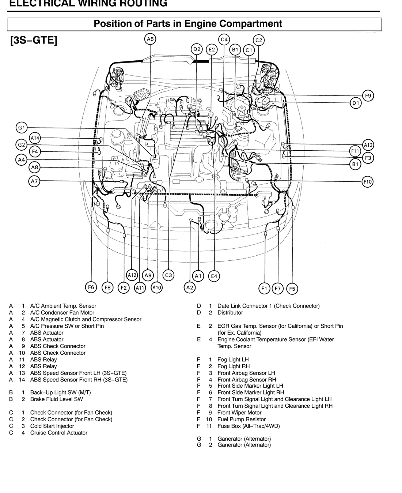
| Pin | OEM wire | Which side | Rest of OEM wire | New wire | How · EWD |
|---|---|---|---|---|---|
| Ambient temp sensor A1 | |||||
| A1 1 | Y | Device side: the 6 in OEM pigtail on the device's own plug (plug stays on the device) | Pigtail / stub Cut to the 6 in pigtail; the rest comes out with the Engine Room Main |
Ambient sensor returnw_amb_rtn · 20 AWG Yellow · EngineRoom-Cother end: A/C sensor common splice |
solder splice onto the device's 6 in factory pigtail (B9: the OEM pigtail stays; the new wire never mates with the plug) 1993 p.212 |
| A1 2 | Y-B | Device side: the 6 in OEM pigtail on the device's own plug (plug stays on the device) | Pigtail / stub Cut to the 6 in pigtail; the rest comes out with the Engine Room Main |
Ambient temp signalw_amb_sig · 20 AWG Yellow · EngineRoom-Cother end: Auto A/C amplifier A32 pin 6 |
solder splice onto the device's 6 in factory pigtail (B9: the OEM pigtail stays; the new wire never mates with the plug) 1993 p.212 |
| LH side marker F5 | |||||
| F5 1 | G | Device side: the 6 in OEM pigtail on the device's own plug (plug stays on the device) | Pigtail / stub Cut to the 6 in pigtail; the rest comes out with the Engine Room Main |
LH marker +w_clr_f5 · 16 AWG Red · EngineRoom-Cother end: Clearance lamp feed splice |
solder splice onto the device's 6 in factory pigtail (B9: the OEM pigtail stays; the new wire never mates with the plug) 1993 p.112; Mitchell 1993 Fig. 1 |
| F5 2 | W-B | Device side: the 6 in OEM pigtail on the device's own plug (plug stays on the device) | Pigtail / stub Cut to the 6 in pigtail; the rest comes out with the Engine Room Main |
LH marker lamp groundw_f5_gnd · 16 AWG Black · EngineRoom-Cother end: Ground stud EB, LH front fender |
solder splice onto the device's 6 in factory pigtail (B9: the OEM pigtail stays; the new wire never mates with the plug) 1993 p.112; Mitchell 1993 Fig. 1 |
| RH side marker F6 | |||||
| F6 1 | G | Device side: the 6 in OEM pigtail on the device's own plug (plug stays on the device) | Pigtail / stub Cut to the 6 in pigtail; the rest comes out with the Engine Room Main |
RH marker +w_clr_f6 · 16 AWG Red · EngineRoom-Cother end: Clearance lamp feed splice |
solder splice onto the device's 6 in factory pigtail (B9: the OEM pigtail stays; the new wire never mates with the plug) 1993 p.112; Mitchell 1993 Fig. 1 |
| F6 2 | W-B | Device side: the 6 in OEM pigtail on the device's own plug (plug stays on the device) | Pigtail / stub Cut to the 6 in pigtail; the rest comes out with the Engine Room Main |
RH marker lamp groundw_f6_gnd · 16 AWG Black · EngineRoom-Cother end: Ground stud EA, RH front fender |
solder splice onto the device's 6 in factory pigtail (B9: the OEM pigtail stays; the new wire never mates with the plug) 1993 p.112; Mitchell 1993 Fig. 1 |
| LH front turn / clearance F7 | |||||
| F7 1 | G | Device side: the 6 in OEM pigtail on the device's own plug (plug stays on the device) | Pigtail / stub Cut to the 6 in pigtail; the rest comes out with the Engine Room Main |
LH clearance +w_clr_f7 · 16 AWG Red · EngineRoom-Cother end: Clearance lamp feed splice |
solder splice onto the device's 6 in factory pigtail (B9: the OEM pigtail stays; the new wire never mates with the plug) 1993 p.112 |
| F7 2 | W-B | Device side: the 6 in OEM pigtail on the device's own plug (plug stays on the device) | Pigtail / stub Cut to the 6 in pigtail; the rest comes out with the Engine Room Main |
LH front lamp groundw_f7_gnd · 16 AWG Black · EngineRoom-Cother end: Ground stud EB, LH front fender |
solder splice onto the device's 6 in factory pigtail (B9: the OEM pigtail stays; the new wire never mates with the plug) 1993 p.112 / p.130 |
| F7 3 | G-B | Device side: the 6 in OEM pigtail on the device's own plug (plug stays on the device) | Pigtail / stub Cut to the 6 in pigtail; the rest comes out with the Engine Room Main |
LH turn +12 V to the headlampw_turn_h1 · 18 AWG Red · EngineRoom-Cother end: LH headlamp H1 pin TURN |
solder splice onto the device's 6 in factory pigtail (B9: the OEM pigtail stays; the new wire never mates with the plug) 1993 p.130 |
| F7 3 | G-B | Device side: the 6 in OEM pigtail on the device's own plug (plug stays on the device) | Pigtail / stub Cut to the 6 in pigtail; the rest comes out with the Engine Room Main |
LH front turn +w_turn_f7 · 18 AWG Red · EngineRoom-Cother end: J/B No.1 (LH kick panel) pin 1H-4 |
solder splice onto the device's 6 in factory pigtail (B9: the OEM pigtail stays; the new wire never mates with the plug) 1993 p.130 |
| RH front turn / clearance F8 | |||||
| F8 1 | G | Device side: the 6 in OEM pigtail on the device's own plug (plug stays on the device) | Pigtail / stub Cut to the 6 in pigtail; the rest comes out with the Engine Room Main |
RH clearance +w_clr_f8 · 16 AWG Red · EngineRoom-Cother end: Clearance lamp feed splice |
solder splice onto the device's 6 in factory pigtail (B9: the OEM pigtail stays; the new wire never mates with the plug) 1993 p.112 |
| F8 2 | W-B | Device side: the 6 in OEM pigtail on the device's own plug (plug stays on the device) | Pigtail / stub Cut to the 6 in pigtail; the rest comes out with the Engine Room Main |
RH front lamp groundw_f8_gnd · 16 AWG Black · EngineRoom-Cother end: Ground stud EA, RH front fender |
solder splice onto the device's 6 in factory pigtail (B9: the OEM pigtail stays; the new wire never mates with the plug) 1993 p.112 / p.130 |
| F8 3 | G-Y | Device side: the 6 in OEM pigtail on the device's own plug (plug stays on the device) | Pigtail / stub Cut to the 6 in pigtail; the rest comes out with the Engine Room Main |
RH turn +12 V to the headlampw_turn_h2 · 18 AWG Red · EngineRoom-Cother end: RH headlamp H2 pin TURN |
solder splice onto the device's 6 in factory pigtail (B9: the OEM pigtail stays; the new wire never mates with the plug) 1993 p.130 |
| F8 3 | G-Y | Device side: the 6 in OEM pigtail on the device's own plug (plug stays on the device) | Pigtail / stub Cut to the 6 in pigtail; the rest comes out with the Engine Room Main |
RH front turn +w_turn_f8 · 18 AWG Red · EngineRoom-Cother end: J/B No.1 (LH kick panel) pin 1H-8 |
solder splice onto the device's 6 in factory pigtail (B9: the OEM pigtail stays; the new wire never mates with the plug) 1993 p.130 |
| Wiper motor F9 | |||||
| F9 1 | L-O | Device side: the 6 in OEM pigtail on the device's own plug (plug stays on the device) | Pigtail / stub Cut to the 6 in pigtail; the rest comes out with the Engine Room Main |
Wiper HIGHw_wip_hi · 14 AWG Red · EngineRoom-Cother end: Cowl plug IE1 (LH kick) pin 20 |
solder splice onto the device's 6 in factory pigtail (B9: the OEM pigtail stays; the new wire never mates with the plug) 1993 p.148 |
| F9 2 | L-B | Device side: the 6 in OEM pigtail on the device's own plug (plug stays on the device) | Pigtail / stub Cut to the 6 in pigtail; the rest comes out with the Engine Room Main |
Wiper LOWw_wip_lo · 14 AWG Red · EngineRoom-Cother end: Cowl plug IE1 (LH kick) pin 13 |
solder splice onto the device's 6 in factory pigtail (B9: the OEM pigtail stays; the new wire never mates with the plug) 1993 p.148 |
| F9 3 | L-W | Device side: the 6 in OEM pigtail on the device's own plug (plug stays on the device) | Pigtail / stub Cut to the 6 in pigtail; the rest comes out with the Engine Room Main |
Wiper park switchw_wip_park · 14 AWG Yellow · EngineRoom-Cother end: Cowl plug IE1 (LH kick) pin 6 |
solder splice onto the device's 6 in factory pigtail (B9: the OEM pigtail stays; the new wire never mates with the plug) 1993 p.148 |
| F9 4 | L | Device side: the 6 in OEM pigtail on the device's own plug (plug stays on the device) | Pigtail / stub Cut to the 6 in pigtail; the rest comes out with the Engine Room Main |
Wiper +12 Vw_wip_b · 14 AWG Red · EngineRoom-Cother end: J/B No.1 (LH kick panel) pin 1H-5 |
solder splice onto the device's 6 in factory pigtail (B9: the OEM pigtail stays; the new wire never mates with the plug) 1993 p.148 |
| LH headlamp H1 | |||||
| H1 1 | R-L | Device side: the 6 in OEM pigtail on the device's own plug (plug stays on the device) | Pigtail / stub Cut to the 6 in pigtail; the rest comes out with the Engine Room Main |
Low beam +12 V to LH headlampw_pmu_hl · 14 AWG Red · EngineRoom-Cother end: Low-beam output splice |
solder splice onto the device's 6 in factory pigtail (B9: the OEM pigtail stays; the new wire never mates with the plug) 1993 p.116 |
| H1 2 | R-W | Device side: the 6 in OEM pigtail on the device's own plug (plug stays on the device) | Pigtail / stub Cut to the 6 in pigtail; the rest comes out with the Engine Room Main |
High beam +12 V to LH headlampw_hl_hi_h1 · 14 AWG Red · EngineRoom-Cother end: High-beam output splice |
solder splice onto the device's 6 in factory pigtail (B9: the OEM pigtail stays; the new wire never mates with the plug) 1993 p.116 |
| H1 3 | R | Device side: the 6 in OEM pigtail on the device's own plug (plug stays on the device) | Pigtail / stub Cut to the 6 in pigtail; the rest comes out with the Engine Room Main |
LH headlamp groundw_h1_gnd · 14 AWG Black · EngineRoom-Cother end: Ground stud EB, LH front fender |
solder splice onto the device's 6 in factory pigtail (B9: the OEM pigtail stays; the new wire never mates with the plug) 1993 p.116 |
| RH headlamp H2 | |||||
| H2 1 | R-L | Device side: the 6 in OEM pigtail on the device's own plug (plug stays on the device) | Pigtail / stub Cut to the 6 in pigtail; the rest comes out with the Engine Room Main |
Low beam +12 V to RH headlampw_hl_lo_h2 · 14 AWG Red · EngineRoom-Cother end: Low-beam output splice |
solder splice onto the device's 6 in factory pigtail (B9: the OEM pigtail stays; the new wire never mates with the plug) 1993 p.116 |
| H2 2 | R-W | Device side: the 6 in OEM pigtail on the device's own plug (plug stays on the device) | Pigtail / stub Cut to the 6 in pigtail; the rest comes out with the Engine Room Main |
High beam +12 V to RH headlampw_pmu_hr · 14 AWG Red · EngineRoom-Cother end: High-beam output splice |
solder splice onto the device's 6 in factory pigtail (B9: the OEM pigtail stays; the new wire never mates with the plug) 1993 p.116 |
| H2 3 | R-Y | Device side: the 6 in OEM pigtail on the device's own plug (plug stays on the device) | Pigtail / stub Cut to the 6 in pigtail; the rest comes out with the Engine Room Main |
RH headlamp groundw_h2_gnd · 14 AWG Black · EngineRoom-Cother end: Ground stud EA, RH front fender |
solder splice onto the device's 6 in factory pigtail (B9: the OEM pigtail stays; the new wire never mates with the plug) 1993 p.116 |
| LH pop-up motor R2 | |||||
| R2 1 | G-W | Device side: the 6 in OEM pigtail on the device's own plug (plug stays on the device) | Pigtail / stub Cut to the 6 in pigtail; the rest comes out with the Engine Room Main |
LH pop-up up (open) limit switchw_rtr_open_r2 · 18 AWG Yellow · EngineRoom-Cother end: Pop-up open limit splice |
solder splice onto the device's 6 in factory pigtail (B9: the OEM pigtail stays; the new wire never mates with the plug) 1993 p.117 |
| R2 2 | G-O | Device side: the 6 in OEM pigtail on the device's own plug (plug stays on the device) | Pigtail / stub Cut to the 6 in pigtail; the rest comes out with the Engine Room Main |
LH pop-up motor drive (relay R8 pin 2 to motor pin 2)w_rtr_r2_2 · 16 AWG Red · EngineRoom-Cother end: Cowl plug IE1 (LH kick) pin 15 |
solder splice onto the device's 6 in factory pigtail (B9: the OEM pigtail stays; the new wire never mates with the plug) 1993 p.117 |
| R2 3 | G-Y | Device side: the 6 in OEM pigtail on the device's own plug (plug stays on the device) | Pigtail / stub Cut to the 6 in pigtail; the rest comes out with the Engine Room Main |
LH pop-up down (close) limit switchw_rtr_close_r2 · 18 AWG Yellow · EngineRoom-Cother end: Pop-up close limit splice |
solder splice onto the device's 6 in factory pigtail (B9: the OEM pigtail stays; the new wire never mates with the plug) 1993 p.117 |
| R2 4 | G | Device side: the 6 in OEM pigtail on the device's own plug (plug stays on the device) | Pigtail / stub Cut to the 6 in pigtail; the rest comes out with the Engine Room Main |
LH pop-up motor drive (relay R8 pin 1 to motor pin 4)w_rtr_r2_4_p · 16 AWG Red · EngineRoom-Cother end: LH pop-up motor feed splice |
solder splice onto the device's 6 in factory pigtail (B9: the OEM pigtail stays; the new wire never mates with the plug) 1993 p.117 |
| R2 5 | W-B | Device side: the 6 in OEM pigtail on the device's own plug (plug stays on the device) | Pigtail / stub Cut to the 6 in pigtail; the rest comes out with the Engine Room Main |
LH pop-up motor groundw_rtr_gnd_r2 · 16 AWG Black · EngineRoom-Cother end: LH pop-up motor ground splice |
solder splice onto the device's 6 in factory pigtail (B9: the OEM pigtail stays; the new wire never mates with the plug) 1993 p.117 |
| RH pop-up motor R3 | |||||
| R3 1 | G-W | Device side: the 6 in OEM pigtail on the device's own plug (plug stays on the device) | Pigtail / stub Cut to the 6 in pigtail; the rest comes out with the Engine Room Main |
RH pop-up up (open) limit switchw_rtr_open_r3 · 18 AWG Yellow · EngineRoom-Cother end: Pop-up open limit splice |
solder splice onto the device's 6 in factory pigtail (B9: the OEM pigtail stays; the new wire never mates with the plug) 1993 p.117 |
| R3 2 | G-B | Device side: the 6 in OEM pigtail on the device's own plug (plug stays on the device) | Pigtail / stub Cut to the 6 in pigtail; the rest comes out with the Engine Room Main |
RH pop-up motor drive (relay R8 pin 5 to motor pin 2)w_rtr_r3_2 · 16 AWG Red · EngineRoom-Cother end: Cowl plug IE1 (LH kick) pin 8 |
solder splice onto the device's 6 in factory pigtail (B9: the OEM pigtail stays; the new wire never mates with the plug) 1993 p.117 |
| R3 3 | G-Y | Device side: the 6 in OEM pigtail on the device's own plug (plug stays on the device) | Pigtail / stub Cut to the 6 in pigtail; the rest comes out with the Engine Room Main |
RH pop-up down (close) limit switchw_rtr_close_r3 · 18 AWG Yellow · EngineRoom-Cother end: Pop-up close limit splice |
solder splice onto the device's 6 in factory pigtail (B9: the OEM pigtail stays; the new wire never mates with the plug) 1993 p.117 |
| R3 4 | G-Y | Device side: the 6 in OEM pigtail on the device's own plug (plug stays on the device) | Pigtail / stub Cut to the 6 in pigtail; the rest comes out with the Engine Room Main |
RH pop-up motor drive (relay R8 pin 4 to motor pin 4)w_rtr_r3_4_p · 16 AWG Red · EngineRoom-Cother end: RH pop-up motor feed splice |
solder splice onto the device's 6 in factory pigtail (B9: the OEM pigtail stays; the new wire never mates with the plug) 1993 p.117 |
| R3 5 | W-B | Device side: the 6 in OEM pigtail on the device's own plug (plug stays on the device) | Pigtail / stub Cut to the 6 in pigtail; the rest comes out with the Engine Room Main |
RH pop-up motor groundw_rtr_gnd_r3 · 16 AWG Black · EngineRoom-Cother end: RH pop-up motor ground splice |
solder splice onto the device's 6 in factory pigtail (B9: the OEM pigtail stays; the new wire never mates with the plug) 1993 p.117 |
No new wire splices onto a factory wire here.
From docs/harness/circuit-plan.md, the plan file; where it and the master disagree, the master wins. Actions: remove = dead, out back to its last live point; keep = factory wire stays; re-fed by = the named new wire takes over.
Open from the draft: whether the car has an A3 idle-up VSV (p.219 lists it, p.28 does not); TBD: look up in the 1993 EWD / FSM.
| Joint | Pin | Colour | Signal | Kept-side end | EWD | Draft said | Action |
|---|---|---|---|---|---|---|---|
| EB2 | 1 | V-R | R/B4 10 A A/C fuse out to pressure switch A5 pin 1 | cowl I9 -> R/B4 10 A A/C fuse pin 2 (also the V-R bus to the A/C amps) | 1993 p.211 | cut + cap; R/B4 gone so the V-R bus needs a re-feed | remove the EB2 leg; A5 pin 1 re-fed by w_acp_1 from the kept R/B4 A/C fuse; the cabin V-R bus keeps |
| EB2 | 2 | Y-R | Pressure switch output to the A/C amp | E10 -> IJ1-11 -> A15 pin 13 (and A3 idle-up VSV pin 2) | 1993 p.211 | reuse the cowl side | remove the EB2 leg (goes with the Engine Wire, B9); A5 pin 4 re-fed by new wire w_ac_psw_in from the switch's own plug in the bay to cabin splice SP-AC-PSW, tied to A15 pin 13 by w_ac_psw_sw (D16; DECISIONS B8 "A5 fix") |
| EB2 | 3, 4 | - | no cavity | - | p.37 | none | none |
| ES2 | 1-5 | B, BR, Y-B, G, R | STA, ECT ground, oil pressure SW, STJ, THW | none (ER No.2 removed) | 1993 p.66, 80, 207 | remove | remove with the harness; oil pressure is the Link sensor OIL-P (AB-engine) and the oil LED on CSB3 L4 (w_oil_k) |
No new wire splices onto a factory wire here.
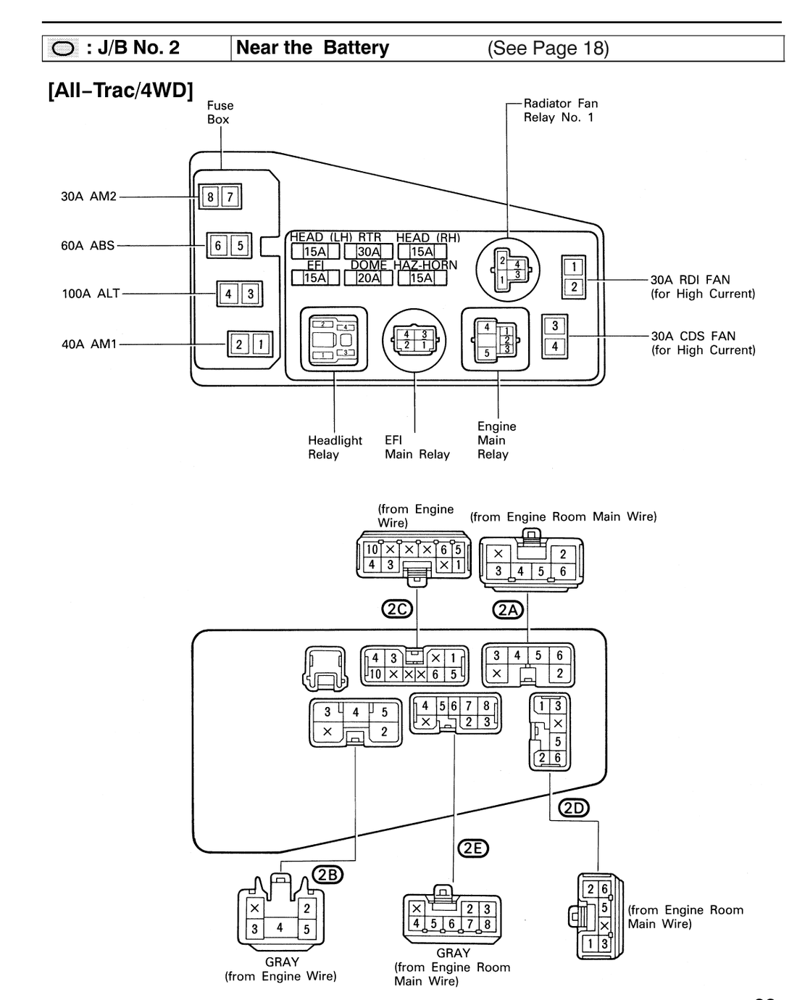
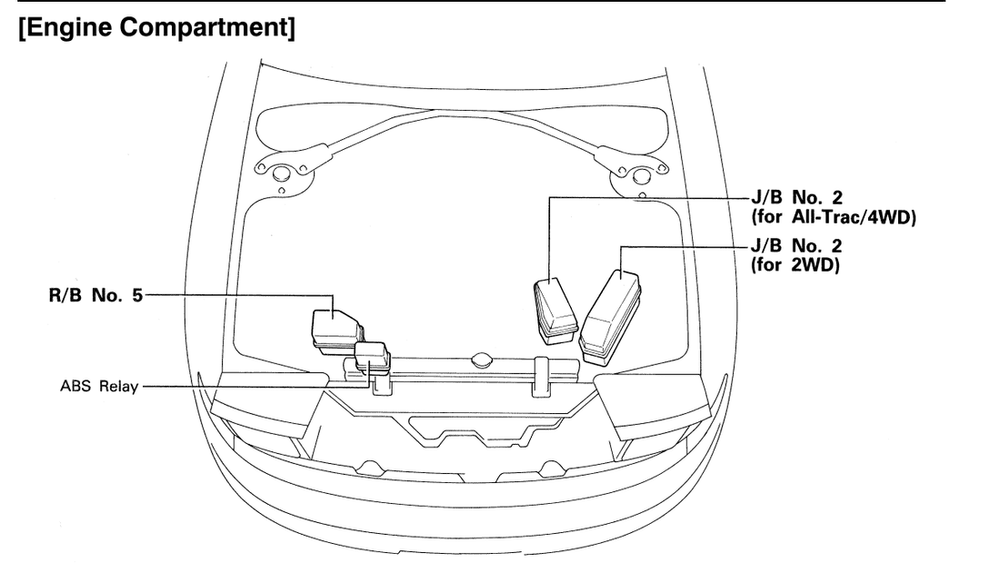
From docs/harness/circuit-plan.md, the plan file; where it and the master disagree, the master wins. Actions: remove = dead, out back to its last live point; keep = factory wire stays; re-fed by = the named new wire takes over.
J/B No.2, F11 and R/B No.5 sit in the engine bay on the ER Main: every lead goes with it (B9). R/B No.2 and No.4 are
cabin boxes and stay (circuits 2, 9, 18). R/B No.3 goes (circuit 17).
| Plug | Pin | Colour | Signal | Old load | EWD | Draft said | Action |
|---|---|---|---|---|---|---|---|
| 2A | 2 | L-R | 30 A CDS FAN out | condenser fan A2 pin 2 | p.210 | re-feed POWER FAN2 | remove; re-fed by w_fan2_pwr (K-FAN2, new wire to the uprated fan) |
| 2A | 3 | R | 15 A HEAD LH out | headlamp H1 pin 3 | p.116 | splice LOGIC HL onto the old R lead | remove; H1 pin 3 is now the lamp common to ground EB (w_h1_gnd); the lamp's +12 V comes on pins 1 / 2 ("Headlamps, DRL and pop-ups") |
| 2A | 4 | B-R | Radiator fan + | radiator fan R1 pin 2 | p.210 | re-feed POWER FAN | remove; re-fed by w_fan_pwr (K-FAN); fan ground w_fan_gnd to EA |
| 2A | 5 | W-B | Relay / coil ground node | ground EB | p.62, 67, 210 | cut + cap | remove (EB stays as a ground point, new wires only) |
| 2A | 6 | R-Y | 15 A HEAD RH out | headlamp H2 pin 3 | p.116 | splice LOGIC HR onto the old lead | remove; H2 pin 3 is now the lamp common to ground EA (w_h2_gnd) |
| 2B | 2, 3, 4, 5 | W, B-R, W, W | AM1 in, AM2 in, J/B2 B+ bus, alternator S | F11 / battery / alternator | p.62, 74, 116 | gone with the Engine Wire | remove; AM1 / AM2 re-fed by w_pdb_am1 / w_pdb_am2 at IE1; alternator S by w_alt_s_c |
| 2C | 1, 3, 4, 5, 6, 10 | LG-B, W, P, W-B, B-W, B-Y | fan coil, ALT -> engine main relay, EFI BATT, ground, A/C clutch, EFI +B | engine | p.62, 79, 210 | gone | remove (Link owns EFI: k_efi) |
| 2D | 1 | B-W | A/C clutch power hop | R/B5 clutch relay pin 3 | p.210 | cut + cap | remove; clutch is w_acc_clutch (K-ACC to A4 pin 4) |
| 2D | 2, 3, 5, 6 | B-R, W, LG-B, W | rad-fan +, headlight relay loop, fan coil, HEAD bus in | R/B5 / loop | p.62, 116, 210 | cut | remove |
| 2E | 2 | W | 30 A RTR out | IE1-3 -> retract relay R8 pin 3 | p.116 | re-feed POWER RTR | remove; re-fed by w_pmu_rtr at IE1-3 (cowl side) |
| 2E | 3 | W | 15 A HAZ-HORN out | R/B5 horn relay pin 3; IE1-12 -> hazard SW H5-8 | p.130, 185 | re-feed LOGIC HZ + horn relay | remove; hazard re-fed by w_haz_cp (LOGIC HZ via SP-HZ); horn relay feed w_horn_30_cp / w_horn_86_cp |
| 2E | 4 | L-Y | 20 A DOME out | J/B1 1H-2 | p.132, 200, 207 | re-feed LOGIC DM | remove; re-fed by w_pmu_dome at 1H-2 (owner fix: DECISIONS B8 list) |
| 2E | 5 | W | AM1 out | IE1-10 -> cowl I2 -> ignition SW I13-4 and R/B2 30 A POWER fuse pin 1 | p.62, 66 | re-feed POWER AM1 | remove; re-fed by w_pdb_am1 at IE1-10. I2 also feeds R/B2, as stock (Dan B17 b) |
| 2E | 6 | B-R | AM2 out | IE1-17 -> I13-10 | p.62, 66 | re-feed POWER AM2 | remove; re-fed by w_pdb_am2 at IE1-17 |
| 2E | 7 | R-Y | Headlight relay coil | IE1-2 -> I2 -> light control SW C15, retract relay R8-8 | p.116 | re-feed LOGIC head relay coils | remove; re-fed by w_head_coil_cp (K-HL coil 85 via SP-HEAD-COIL; Dan N89 a) |
| 2E | 8 | B-O | IGN 7.5 A to J/B2 relay coils | ER Main splice E13 / E4 <- J/B1 1H-7 | p.210, 79 | cut + cap at J/B2 and R/B5 | remove; 1H-7 itself keeps (tapped by w_ig2_in, w_ign, w_k_on_86_cp) |
| F11-A | 2, 3, 4, 7 | W, W, B, B-R | AM1, 100 A ALT, FL MAIN in, AM2 | battery, alternator | p.62, 64 | gone | remove (trunk battery and HeavyDC, B11) |
| F11-C | 1 | W-L | 60 A ABS out | ABS relays (ER Main E12) | p.62; 1992 p.192 | cut + cap | remove (ABS gone, circuit 6) |
No new wire splices onto a factory wire here.
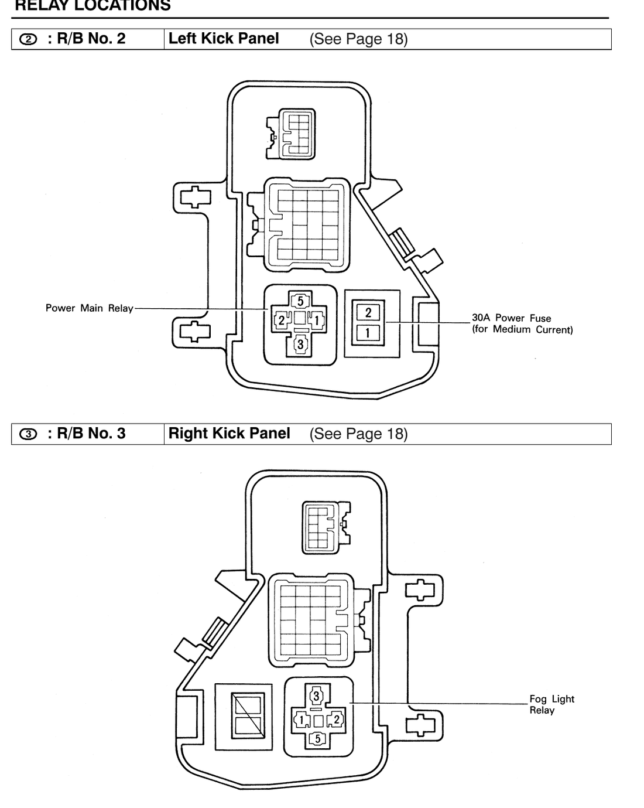
From docs/harness/circuit-plan.md, the plan file; where it and the master disagree, the master wins. Actions: remove = dead, out back to its last live point; keep = factory wire stays; re-fed by = the named new wire takes over.
R/B No.2 check (2026-11-02, Dan B4 / B17 b): the only feed is the factory W from cowl splice I2 (AM1, IE1-10) into the
30 A POWER fuse pin 1; W-L is that fuse's output, so nothing else may land on it (1993 p.26, p.62, p.136-145; 1990 p.46
and 1992 p.66 agree; US = Canada). Splice codes are per diagram: the "I2" on the 1990 / 1992 cruise pages (IG1-11 BR
ground, group 3) and the fog relay's low-beam "I2" (1992 p.128) may not be the AM1 splice; tell them apart by wire colour
(W = AM1) before removing a leg.
| Terminal | Pin | Colour | Signal | Kept-side end | EWD | Draft said | Action |
|---|---|---|---|---|---|---|---|
| 30 A POWER fuse | 1 | W | AM1 branch in | cowl I2 <- IE1-10 | p.62 | keep | fed by AM1 through the factory I2 branch (w_pdb_am1 at IE1-10), as stock; w_rb2_feed dropped (Dan B17 b) |
| 30 A POWER fuse | 2 | W-L | 30 A POWER out | I1 / I4 -> power main relay 4, door lock ECU, sunroof, seat | p.137 | keep | keep (fed through the kept POWER fuse); w_rb2_wl dropped (Dan B17 b) |
| Power main relay | 1 | W-G | window / accessory power out | I1 -> IC1-3, IK1-3 | p.137 | re-feed POWER PWR + k_pwr | keep (no k_pwr) |
| Power main relay | 2 | L-Y | coil + (GAUGE via key-off diode D6) | I1 / D6 | p.136-137 | reuse as k_pwr 86 | keep |
| Power main relay | 3 | W-B | coil ground | ground | p.137 | cut + cap | keep |
| Power main relay | 4 | W-L | contact in | I1 / I4 (POWER fuse out) | p.137 | cut + cap | keep |
No new wire splices onto a factory wire here.
From docs/harness/circuit-plan.md, the plan file; where it and the master disagree, the master wins. Actions: remove = dead, out back to its last live point; keep = factory wire stays; re-fed by = the named new wire takes over.
No 1993 TIS fog page: relay and switch pins from 1992 p.128 and Mitchell 1993 Fig. 1 (grid C2-3); the fuse, switch
illumination and ground ends from 1993 p.62 / p.109 / p.231. USA wiring (Canada differs: 1992 p.122). 1993 p.26 numbers
the relay cavities 1, 2, 3, 5 (pin 4 below may be cavity 5 on the box). Every wire is removed back to its last live
point, never capped (Dan 2026-11-02); each has a master row.
| Terminal | Pin | Colour | Signal | Kept-side end | EWD | Draft said | Action |
|---|---|---|---|---|---|---|---|
| Fog relay | 1 | R-W | fog lamp feed | cowl -> EA1-6 -> ER Main -> fog lamps | 1992 p.128 | open | remove whole (no live end; the bay leg goes with B9), w_fog_rb3_1 |
| Fog relay | 4 | G-R | contact in (20 A FR FOG) | R/B4 FOG fuse pin 2 | 1992 p.128; p.62 | open | remove whole (the fuse and the relay both come out), w_fog_rb3_4 |
| Fog relay | 3 | G-B | coil - (fog switch) | fog switch F12 pin 6 | 1992 p.128 | open | remove whole (switch and relay both come out), w_fog_sw |
| Fog relay | 2 | R-W | coil + (low-beam line, I2 / IE1-18) | cowl I2 low-beam lead (IE1-18 / C15-12) | 1992 p.128; p.116 | open | remove back to splice I2 (I2 keeps its 2 low-beam legs), w_fog_rb3_2 |
| Fog switch F12 | 3 | W-B | ground | J/B No.3 3A-1 (ground bus) | p.231; Mitchell 1993 | - | remove back to J/B No.3 3A-1 (the bus stays for the other switches), w_fog_sw_gnd |
| Fog switch F12 | 1 | G | illumination + | J/B No.3 3C-14 (TAIL illumination bus) | p.109 | - | remove back to J/B No.3 3C-14, w_fog_sw_ill |
| Fog switch F12 | 2 | W-G | illumination - | J/B No.3 3A-10 (ILL- bus to rheostat R10) | p.109 | - | remove back to J/B No.3 3A-10, w_fog_sw_ill_rtn |
| Fog switch F12 | 4, 5 | - | not used; no fog indicator in the switch or the meter | - | Mitchell 1993; p.206-207 | - | none |
No new wire splices onto a factory wire here.
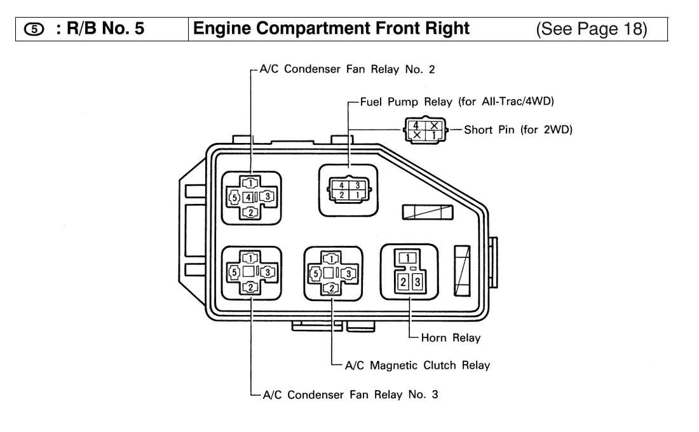
From docs/harness/circuit-plan.md, the plan file; where it and the master disagree, the master wins. Actions: remove = dead, out back to its last live point; keep = factory wire stays; re-fed by = the named new wire takes over.
Open from the draft: R/B No.2 / No.4 also carry multi-pin plugs (1993 p.26-27) whose cavity pinout is not in the 1993
pulls; the terminals above are what the system pages show. TBD: look up in the 1993 EWD / FSM.
| Relay | Pin | Colour | Signal | Old load | EWD | Draft said | Action |
|---|---|---|---|---|---|---|---|
| Horn relay | 3 | W | HAZ-HORN feed | J/B2 2E-3 | p.185 | cut + cap | remove; K-HORN (LOGIC M3) fed by w_horn_30_cp / w_horn_86_cp |
| Horn relay | 2 | G | coil - to horn SW | IE1-19 -> horn SW C15-10 | p.185 | reuse | remove the ER Main leg; re-fed by w_horn_85_cp (K-HORN 85 at IE1-19, cowl side) |
| Horn relay | 1 | G-R | horn + | horns H3-1, H4-1 | p.185 | splice the LOGIC horn relay onto the G-R lead | remove; re-fed by w_pmu_horn_cp -> SP-HORN -> w_horn_lh / w_horn_rh (new wire to each horn) |
| A/C mag clutch relay | 1, 5 | R-L | coil + / contact in (GAUGE) | J/B1 1H-1 | p.210 | cut + cap | remove |
| A/C mag clutch relay | 2 | L-Y | coil - (A/C amp MGC) | EA1-3 -> IJ1-1 -> A15 pin 8 | p.210-211 | maybe reuse into k_acc | remove the ER Main leg; A15 pin 8 re-fed by w_acc_trig (to K-ACC 85, D16) |
| A/C mag clutch relay | 3 | B-W | clutch power out | E2 -> 2D-1 | p.210 | cut + cap | remove; clutch is w_acc_clutch |
| Condenser fan relay No.2 | 1-5 | B-O, LG-B, B, W-B, B-R | coil IGN, coil -, series link, NC ground, rad fan + | ER Main | p.210 | cut + cap | remove; fans are K-FAN / K-FAN2 on Link outputs (w_fan85, w_fan285) |
| Condenser fan relay No.3 | 5 | B-W | condenser fan motor (-) | A2 pin 1 | p.210 | re-ground A2-1 to EA | remove; new fan grounded by w_fan2_gnd to EA |
| Condenser fan relay No.3 | 1, 2, 3 | B-W, W-B, B | coil +, coil -, series link | ER Main | p.210 | cut + cap | remove |
| Fuel pump relay | 1-4 | L-O, L-W, G-R, L-B | contact common, low / high speed out, coil (ECU FPR) | C9, F10, IE2-18 / 19 / 20 | p.78-79 | cut + cap | remove; fuel pump is K-FP in the trunk (w_fpump_r, coil w_fp85) |
No new wire splices onto a factory wire here.
From docs/harness/circuit-plan.md, the plan file; where it and the master disagree, the master wins. Actions: remove = dead, out back to its last live point; keep = factory wire stays; re-fed by = the named new wire takes over.
Every lead below is dead and comes out back to its last live point (splice, plug or box), unless the action names a
master wire. Meter plug codes are the 1993 codes C12 (A) / C13 (B) / C14 (C), in the master too (N14 a, 2026-11-05).
Open from the draft: the ABS ECU ground pin labels in Mitchell Fig.13 are partly illegible, and the front airbag sensor
leads are taken to be Cowl Wire (no joint drawn). TBD: look up in the 1993 EWD / FSM.
| Part / plug | Pins | Kept-side ends | EWD | Draft said | Action |
|---|---|---|---|---|---|
| OEM ECU plug A (E9, Cowl Wire) | 1 BATT, 2 ELS, 5 W, 6 FPR, 9 SPD, 10 AC, 11 STA, 12 / 13 +B, 14 FC | IG2-7, J/B1 1D-6, I6 / meter C12-3, IE2-20, J2 (meter C13-6), IG1-4, I6, I6, IG2-5 / C9-4 | 1993 p.79-81 | cut + cap | remove |
| OEM ECU plug A (E9) | 4 STP (G-W) | J2 <- stop light SW S9 | 1993 p.79 | cut + cap | remove the E9 leg; S9 pin 1 keeps, tapped by w_sw6 (CSB3 opto IN1) |
| OEM ECU plug A (E9) | 7 ATS (L-Y) | IG2-1 -> IH1-1 -> A15-2 | 1993 p.79 | open (see IH1-1) | remove; A15 pin 2 grounded by w_ac_cool_gnd (group 4) |
| OEM ECU plug A (E9) | 21 ACT (LG-B) | IJ1-3 (G-Y) -> A15 pin 11 | 1993 p.79 | maybe carry ACT to the Link | remove the E9 leg; A15 pin 11 re-fed by w_ac_kill (Link ACT kill, D16) |
| Circuit opening relay C9 (cowl) | 1, 2, 3, 4, 6 | IE2-18, I6, I6, IG2-5, J/B3 3B-2 -> ground ID | 1993 p.78 | cut + cap | remove (J/B3 and ID keep) |
| SRS centre airbag sensor | 1, 6, 7, 8, 9, 12, 13, 14 | J/B1 1C-3 / 1C-1 / 1C-4 / 1C-2, I4 (meter C12-7 / -8), ground IE / IG, IG2-3, IG2-12 | Mitchell 1993 Fig.12; 1992 p.200 | cut + cap | remove (circuit 5) |
| SRS front sensors F3 / F4, squib leads | 2-5, 10-11 | cowl runs along each fender; spiral cable | Fig.12; 1993 p.28 | remove back to the cowl trunk | remove |
| ABS ECU (26-pin and 16-pin), actuator A7 / A8, relays A11 / A12, check conn A9 / A10 | all | ID1, IF1, J/B1 1F-8 / 1F-11 / 1F-13, J2, decel sensor, IF1-16 -> IG2-17 | Mitchell 1993 Fig.13; 1992 p.192 | cut + cap; remove the ID1 leads | remove (circuit 6); J/B1 1F-8 park brake keeps its other loads |
| Wheel speed sensors (A13, A14, rears) | 1 / 2 | ER Main / Cowl / Floor leads | 1992 p.192 | cut at the sensor plugs | sensors keep; OEM leads removed; re-fed by WheelSpeed-Front / -Rear (WSS-FL, WSS-FR, WSS-RL, WSS-RR) |
| Cruise ECU plug A / B (motor type) | all but the stalk leads | J3, stop SW, J2, C17, park brake SW, IG1-6 / 7 / 17 / 18 / 2 / 8, meter C12-2, IG2-6 | Mitchell 1993 Fig.12; [90/92] 1990 p.118-119 | cut + cap, keep the stalk leads | remove (circuit 4) |
| Cruise control switch in the combination switch, plug C16 (B) | its 3 pins (master; Always 1993, README) | stalk switch | 1993 EWD grid 59 (Mitchell Fig. 15); 1993 TIS p.HdlitUSA (C16 = combination SW (B)); 1990 p.116 / 1992 p.180 same | keep for the CSB3 | keep; tapped by w_an2, w_sw2, w_cru_gnd (Dash) |
| Cruise clutch switch C17 | 2 (B) | was cruise ECU N&C | Mitchell 1993 Fig.12; 1993 p.32 | not in the draft | keep; tapped by w_sw5 (CSB3 cavity 5, board S6, the one clutch input) |
| Meter C12 (A) (1993) | 1, 2, 3, 5, 6, 7, 8, 9, 10 | rheostat, cruise PI, I6, IG2-14, IG1-13, I4, I4, IF1-9, IF1-12 | 1993 p.206-207 | cut + cap | remove (old meter gone, circuit 7) |
| Meter C13 (B) | 2 G-B turn LH, 11 G-Y turn RH, 12 R-L high beam | J3 / IE1-11 | 1993 p.206 | reuse per Dash | keep; pins 2 / 11 tapped by w_tl_a, w_tr_a (Dash); pin 12 R-L leg removed back to I2 (w_rl_c13_cut, A2 b) |
| Meter C13 (B) (1993) | 1, 3, 4, 5, 6, 7, 10 | J/B3 3B-6, IF1-14, IG1-15, J6, J2, 3B-9, IG2-20 | 1993 p.206 | cut + cap | remove |
| Meter C14 (C) | 9 B-O IGN, 8 Y charge, 1 R-G brake / park brake | 1D-5, I5 / IG2-16, J6 | 1993 p.206-207 | reuse per Dash | keep; tapped by w_ig_tap, w_chg_k, w_pk_k (Dash) |
| Meter C14 (C) (1993) | 3, 4, 5, 6 oil (Y-B), 10, tacho | 3B-10, J1, integration relay, IG1-12, 3B-16, IG1-14 | 1993 p.206-207 | cut + cap | remove; oil warning is the LED on CSB3 L4 (w_oil_a / w_oil_k) |
| Rear wiper motor and relay, rear washer outlet W1 pin 3 [90/92] | 1-3; W1-3 | back door wire -> J/B1 1F-10, rear wiper switch (1993 code TBD) | 1992 p.150 | cut + cap | remove (R54); front washer W1 pins 1 / 2 re-fed by w_wash_neg / w_wash_pos. TBD: look up in the 1993 EWD / FSM whether the pump has a pin 3 |
| Igniter, ECU plugs B / C, DLC1, cruise actuator, compressor clutch lead, back-up SW lead | all | only through IG1 / IG2 / IH1 / EB1 / EB2 | - | leave with the Engine Wire | remove; back-up SW wires re-fed by w_rev_feed_c / w_rev_lamps at the IG2-4 / IG2-13 pigtails (circuit 11) |
No new wire splices onto a factory wire here.
From docs/harness/circuit-plan.md, the plan file; where it and the master disagree, the master wins. Actions: remove = dead, out back to its last live point; keep = factory wire stays; re-fed by = the named new wire takes over.
The draft chopped only the branches into the engine area and kept the outer loop. Under B9 the whole ER Main goes.
Every row is remove; the new wire that takes over each load is listed.
The cabin-side stubs these land on stay: J/B1 1H-2 / 4 / 5 / 6 / 7 / 8 and 1I-1, IE1 (cowl side). They are ER Main
plugs at J/B1 (1993 p.63), so they are 6 in stubs of a removed wire; they are not yet on B9's kept-pigtail list (fault C6,
carried in OPEN-ITEMS row 183: this list is the one to add). Open from the draft: walk the car for anything else taped into the ER Main trunk near J/B2.
| Branch | Colour | Old job | EWD | Draft said | Action |
|---|---|---|---|---|---|
| ER Main -> ET1 lead (J/B1 1I-1) | B | J/B1 main B+ | p.62 | chop at ET1, re-feed | remove, keeping a 6 in 1I-1 stub at J/B1; re-fed by w_pdb_jb1 (JB1 60 A, 6 AWG) |
| ER Main -> J/B2 (2A / 2D / 2E) | various | headlamps, fans, RTR, HAZ-HORN, DOME, AM1 / AM2, IGN, ground | p.23, 62, 116, 210 | chop at J/B2, splice new feeds onto the kept leads | remove; re-feeds as group 6 |
| ER Main -> F11-C | W-L | 60 A ABS | p.62 | chop | remove |
| ER Main -> R/B5 (RH front) | various | fan relays, clutch relay, horn relay, FP relay | p.27, 78, 185, 210 | chop at R/B5, re-feed horns, re-ground A2-1 | remove; re-feeds as group 6 (R/B No.5) |
| ER Main -> fuel pump resistor F10 + splice E3 | L-B / L-W | FP low / high speed | p.78 | chop, remove F10 | remove |
| ER Main -> ABS actuator / relays / check conn | various | ABS | 1992 p.192 | chop | remove |
| ER Main splice E13 / E4 IGN branch | B-O | IGN to J/B2 2E-8 and R/B5 relay No.2 | p.210 | chop both ends | remove; J/B1 1H-7 keeps |
| ER Main ground lead 2A-5 -> EB | W-B | relay / coil ground | p.62 | remove or cap | remove |
| ER Main outer loop: headlamps H1 / H2 | R, R-Y, R-L, R-W | lamp feed and returns | p.116 | kept (outer loop) | remove to the 6 in pigtails; re-fed from K-HL / K-HR (w_pmu_hl, w_hl_lo_h2, w_hl_hi_h1, w_pmu_hr), commons to EB / EA (w_h1_gnd, w_h2_gnd); IE1-11 is now the removal row w_rl_ie1_cut (A2 b; the high-beam LED is fed by w_hb_feed from SP-HR-HI), IE1-18 a cabin wire (w_hl_low K-HR coil) |
| ER Main outer loop: front turn / clearance / markers F5-F8 | G-B, G-Y, G | turn and TAIL | p.112, 130 | kept | remove to the pigtails; re-fed by w_turn_f7 (1H-4), w_turn_f8 (1H-8), w_clr (1H-6) via SP-CLR |
| ER Main outer loop: pop-up motors R2 / R3 | G, G-O, G-Y, G-B, G-W | retract feed and limits | p.117 | kept | remove to the pigtails; re-fed by the w_rtr_* wires from IE1-7 / 8 / 9 / 14 / 15 / 16 |
| ER Main / cowl: wiper F9 and washer W1 | L, L-B, L-O, L-R | wiper +B, LO, HI, park; washer | p.148 | kept | remove to the pigtails; re-fed by w_wip_b (1H-5), w_wip_lo (IE1-13), w_wip_hi (IE1-20), w_wip_park (IE1-6), w_wash_neg / w_wash_pos |
| ER Main fog branch (EA1-6 -> splice E1 -> fog lamps F1 / F2 -> E2 -> EA) | R-W, W-B | fog lamps | 1992 p.128 | kept / open | remove with the ER Main (circuit 17); its cabin leg R/B3-1 -> EA1-6 is w_fog_rb3_1 |
| Group | Joint | Status |
|---|---|---|
| 1 | EB1 Engine <-> Cowl (rear of RH fender) | Decided 2026-10-20 / 2026-10-26: dead. If the ignition-switch black-orange wire is at the engine plug (EB1-1), remove it. J/B No.1 fed from POWER JB1 60 A, 6 AWG for our 60 A load, spliced to a 6 in stub of the old 1I lead |
| 2 | ET1 ER Main <-> Engine (near J/B2) | Decided 2026-10-20 |
| 3 | IG1 / IG2 Engine <-> Cowl (under the ECU) | Decided 2026-10-21: table below |
| Boxes | the 7 OEM boxes + ABS relay box | Decided 2026-10-21: J/B1, J/B3, R/B2, R/B4 stay; J/B2, R/B3, R/B5, ABS relay box go |
| 4 | IH1 Engine <-> A/C No.1 | Decided 2026-10-25 / 2026-10-26: A15 pin 8 drives k_acc; Ign 8 tacho to pin 18; same tacho through 4.7 kΩ to pin 9 (N61); pin 2 hard-grounded; IH1-4/5 engine lock-sensor wires unused. Table below |
| 5 | EB2 / ES2 | Decided 2026-10-25: A5 pin 1 from R/B No.4 10 A A/C; pressure switch already on the master; ER No.2 gone. Table below |
| 6 | Box plugs (J/B2, R/B2-5) | Decided 2026-10-25: R/B2 and R/B4 re-fed; fog removed (Dan 2026-11-02, was cut and cap); starter / heater / A/C fuse stay on R/B4. Table below (R/B2 rows pending Dan's B4 check) |
| 7 | Removed parts on kept harnesses | Decided 2026-10-25: OEM ECU / C9 / SRS / ABS / cruise ECU / meter extras are dead; the Dash taps (was ClusterLED and CSB3) stay. Table below |
| 8 | ER Main branches | Decided 2026-10-25: the whole ER Main goes (B9); re-feeds are new wire on the master. Table below |
New wire goes to the device's own mating plug, or to the new LED headlamp's own leads.
| Part · pin | Device | End | New wire |
|---|---|---|---|
| A4 4 | A/C compressor A4 | New wire to the device's own mating plug | A/C clutch +12 V w_acc_clutch · EngineRoom-C |
| A5 1 | A/C pressure switch A5 (engine bay) | New wire to the device's own mating plug | +12 V to A/C pressure switch w_acp_1 · EngineRoom-C |
| A5 4 | A/C pressure switch A5 (engine bay) | New wire to the device's own mating plug | A/C pressure switch signal w_ac_psw_in · EngineRoom-C |
| H1 DRL | LH headlamp H1 | Lamp's own white DRL lead (new LED lamp) | DRL +12 V to LH headlamp w_drl_h1 · EngineRoom-C |
| H1 TURN | LH headlamp H1 | Lamp's own yellow turn lead (new LED lamp) | LH turn +12 V to the headlamp w_turn_h1 · EngineRoom-C |
| H2 DRL | RH headlamp H2 | Lamp's own white DRL lead (new LED lamp) | DRL +12 V to RH headlamp w_drl_h2 · EngineRoom-C |
| H2 TURN | RH headlamp H2 | Lamp's own yellow turn lead (new LED lamp) | RH turn +12 V to the headlamp w_turn_h2 · EngineRoom-C |
| W1 1 | Washer motor W1 (RH front corner, low) | New wire to the device's own mating plug | Washer motor switch side w_wash_neg · EngineRoom-C |
| W1 2 | Washer motor W1 (RH front corner, low) | New wire to the device's own mating plug | Washer motor +12 V w_wash_pos · EngineRoom-C |
| Row | From → to | OEM wire | How · EWD |
|---|---|---|---|
w_rl_ie1_cutCabinPower | Cowl plug IE1 (LH kick) 11 → Cowl splice I2 on the low-beam R-L lead (IE1 11, combination switch C15 (A) 3, meter C13 (B) 12) | R-L | remove whole: no live end (A2 b); de-pin IE1 cavity 11 cowl side and unsplice at I2; no cut-and-cap 1993 p.116 |
w_rl_c13_cutDash | Cowl splice I2 on the low-beam R-L lead (IE1 11, combination switch C15 (A) 3, meter C13 (B) 12) → Cluster plug C13 (B) 12 | R-L | remove whole: no live end (A2 b); unsplice at I2 and de-pin C13 (B) cavity 12; no cut-and-cap 1993 p.116 |
w_rl_c15_cutDash | Cowl splice I2 on the low-beam R-L lead (IE1 11, combination switch C15 (A) 3, meter C13 (B) 12) → Combination switch plug C15 (A) 3 | R-L | remove whole: no live end (A2 b); unsplice at I2 and de-pin C15 (A) cavity 3; the switch stays; no cut-and-cap 1993 p.116 |
w_cru_gnd_cutDash | Ground point IE, instrument panel brace LH (through the factory BR ground splice) → Combination switch plug C16 (B), cruise switch 17 | BR | remove the C16 (B) pin 17 BR leg back to its ground splice (unsplice it from the IE ground path); a 6 in pigtail stays at C16 for w_cru_gnd; no cut-and-cap 1993 TIS EWD Ground Points p.3 (CRUISE CONTROL SW [COMB. SW] BR to IE) and p.5 (IE = instrument panel brace LH) |
w_fog_rb3_1CabinPower | R/B No.3 (RH kick) 1 → Cowl plug EA1, cowl lead (firewall, cabin side) 6 | R-W | remove whole: no live end (the R/B No.3 relay comes out; the leg forward of the firewall goes with the cowl legs, B9); no cut-and-cap 1992 p.128 / Mitchell 1993 Fig. 1 |
w_fog_rb3_2CabinPower | R/B No.3 (RH kick) 2 → Cowl splice I2 on the high-beam R-W lead (IE1 18 to combination switch C15 pin 12) | R-W | remove back to cowl splice I2 (unsplice the R/B No.3 leg); no cut-and-cap 1992 p.128 / 1993 p.116 / Mitchell 1993 Fig. 1 |
w_fog_rb3_4CabinPower | R/B No.3 (RH kick) 4 → R/B No.4 (RH kick) FOG-2 | G-R | remove whole: both ends come out (the 20 A FR FOG fuse, its R/B No.4 seat stays empty, and the R/B No.3 relay); no cut-and-cap 1993 p.62 / 1992 p.128 / Mitchell 1993 Fig. 1 |
w_fog_fuse_inCabinPower | R/B No.4 (RH kick) FOG-1 → Cowl splice I9 | W | remove back to cowl splice I9 (unsplice the FOG leg); the fuse comes out and its R/B No.4 seat stays empty; no cut-and-cap 1993 p.62 |
w_fog_swCabinPower | R/B No.3 (RH kick) 3 → Fog light switch F12 (instrument panel) 6 | G-B | remove whole: both ends come out (switch F12 and the R/B No.3 relay); no cut-and-cap 1992 p.128 / Mitchell 1993 Fig. 1 |
w_fog_sw_gndCabinPower | J/B No.3 (behind the combination meter) 3A-1 → Fog light switch F12 (instrument panel) 3 | W-B | remove back to J/B No.3 plug 3A cavity 1 (de-pin); J/B No.3 stays; no cut-and-cap 1993 p.231 / Mitchell 1993 Fig. 1 |
w_fog_sw_illCabinPower | J/B No.3 (behind the combination meter) 3C-14 → Fog light switch F12 (instrument panel) 1 | G | remove back to J/B No.3 plug 3C cavity 14 (de-pin); J/B No.3 stays; no cut-and-cap 1993 p.109 / Mitchell 1993 Fig. 1 |
w_fog_sw_ill_rtnCabinPower | J/B No.3 (behind the combination meter) 3A-10 → Fog light switch F12 (instrument panel) 2 | W-G | remove back to J/B No.3 plug 3A cavity 10 (de-pin); J/B No.3 stays; no cut-and-cap 1993 p.109 / Mitchell 1993 Fig. 1 |